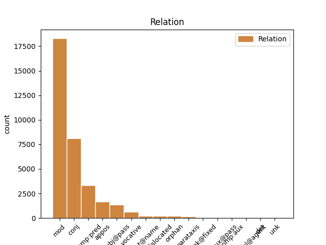
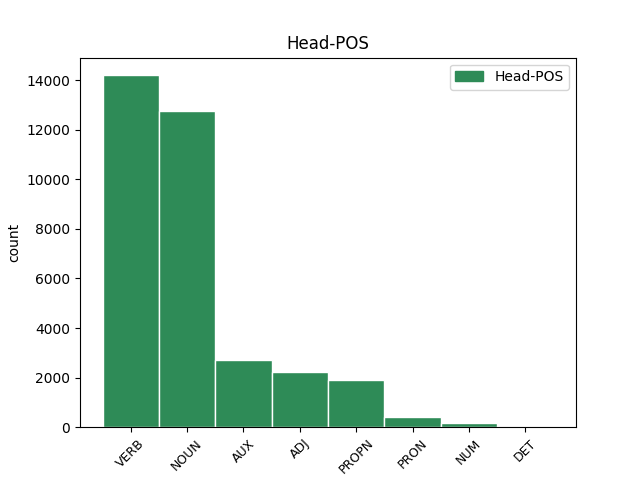
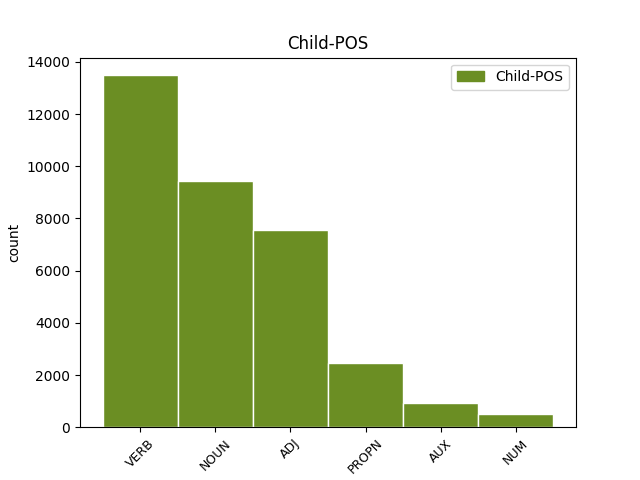

Distribution of features within this leaf



Agreement Rules sorted by frequency.
- When the dependent token is the modifer(mod) of the head token, and the dependent token is VERB.
1 ἐάν _ _ _ _ 0 _ _ _
2 τις _ _ _ _ 0 _ _ _
3 ἐπιθῇ _ _ _ _ 0 _ _ _
4 ἐπ’ _ _ _ _ 0 _ _ _
5 αὐτά _ _ _ _ 0 _ _ _
6 ἐπιθήσει _ _ _ _ 0 _ _ _
7 ἐπ’ _ _ _ _ 0 _ _ _
8 αὐτὸν _ _ _ _ 0 _ _ _
9 ὁ _ _ _ _ 0 _ _ _
10 θεὸς _ _ _ _ 0 _ _ _
11 τὰς _ _ _ _ 0 _ _ _
12 πληγὰς πληγή NOUN Nb Case=Acc|Gender=Fem|Number=Plur 0 _ _ _
13 τὰς _ _ _ _ 0 _ _ _
14 γεγραμμένας γράφω VERB V- Aspect=Perf|Case=Acc|Gender=Fem|Number=Plur|Tense=Past|VerbForm=Part|Voice=Pass 12 mod _ ref=REV_22.18
15 ἐν _ _ _ _ 0 _ _ _
16 τῷ _ _ _ _ 0 _ _ _
17 βιβλίῳ _ _ _ _ 0 _ _ _
18 τούτῳ _ _ _ _ 0 _ _ _
1 ναί _ _ _ _ 0 _ _ _
2 ἔρχομαι ἔρχομαι VERB V- Mood=Ind|Number=Sing|Person=1|Tense=Pres|VerbForm=Fin|Voice=Mid 0 _ _ _
3 ταχύ ταχύς ADJ A- Case=Acc|Degree=Pos|Gender=Neut|Number=Sing 2 mod _ ref=REV_22.20
1 ἔξω _ _ _ _ 0 _ _ _
2 οἱ _ _ _ _ 0 _ _ _
3 κύνες _ _ _ _ 0 _ _ _
4 καὶ _ _ _ _ 0 _ _ _
5 οἱ _ _ _ _ 0 _ _ _
6 φάρμακοι _ _ _ _ 0 _ _ _
7 καὶ _ _ _ _ 0 _ _ _
8 οἱ _ _ _ _ 0 _ _ _
9 πόρνοι _ _ _ _ 0 _ _ _
10 καὶ _ _ _ _ 0 _ _ _
11 οἱ _ _ _ _ 0 _ _ _
12 φονεῖς _ _ _ _ 0 _ _ _
13 καὶ _ _ _ _ 0 _ _ _
14 οἱ _ _ _ _ 0 _ _ _
15 εἰδωλολάτραι _ _ _ _ 0 _ _ _
16 καὶ _ _ _ _ 0 _ _ _
17 πᾶς _ _ _ _ 0 _ _ _
18 ποιῶν ποιέω VERB V- Case=Nom|Gender=Masc|Number=Sing|Tense=Pres|VerbForm=Part|Voice=Act 0 _ _ _
19 καὶ _ _ _ _ 0 _ _ _
20 φιλῶν φιλέω VERB V- Case=Nom|Gender=Masc|Number=Sing|Tense=Pres|VerbForm=Part|Voice=Act 18 conj _ ref=REV_22.15
21 ψεῦδος _ _ _ _ 0 _ _ _
1 Ἡ _ _ _ _ 0 _ _ _
2 χάρις χάρις NOUN Nb Case=Nom|Gender=Fem|Number=Sing 0 _ _ _
3 τοῦ _ _ _ _ 0 _ _ _
4 κυρίου κύριος NOUN Nb Case=Gen|Gender=Masc|Number=Sing 2 mod _ ref=REV_22.21
5 Ἰησοῦ _ _ _ _ 0 _ _ _
6 μετὰ _ _ _ _ 0 _ _ _
7 πάντων _ _ _ _ 0 _ _ _
1 καὶ _ _ _ _ 0 _ _ _
2 τὸ _ _ _ _ 0 _ _ _
3 πνεῦμα πνεῦμα NOUN Nb Case=Nom|Gender=Neut|Number=Sing 0 _ _ _
4 καὶ _ _ _ _ 0 _ _ _
5 ἡ _ _ _ _ 0 _ _ _
6 νύμφη νύμφη NOUN Nb Case=Nom|Gender=Fem|Number=Sing 3 conj _ ref=REV_22.17
7 λέγουσιν _ _ _ _ 0 _ _ _
1 γράψον _ _ _ _ 0 _ _ _
2 ὅτι _ _ _ _ 0 _ _ _
3 οὗτοι _ _ _ _ 0 _ _ _
4 οἱ _ _ _ _ 0 _ _ _
5 λόγοι _ _ _ _ 0 _ _ _
6 πιστοὶ πιστός ADJ A- Case=Nom|Degree=Pos|Gender=Masc|Number=Plur 9 comp:pred _ ref=REV_21.5
7 καὶ _ _ _ _ 0 _ _ _
8 ἀληθινοί _ _ _ _ 0 _ _ _
9 εἰσιν εἰμί AUX V- Mood=Ind|Number=Plur|Person=3|Tense=Pres|VerbForm=Fin|Voice=Act 0 _ _ _
1 ἐγώ _ _ _ _ 0 _ _ _
2 εἰμι εἰμί AUX V- Mood=Ind|Number=Sing|Person=1|Tense=Pres|VerbForm=Fin|Voice=Act 0 _ _ _
3 ἡ _ _ _ _ 0 _ _ _
4 ῥίζα ῥίζα NOUN Nb Case=Nom|Gender=Fem|Number=Sing 2 comp:pred _ ref=REV_22.16
5 καὶ _ _ _ _ 0 _ _ _
6 τὸ _ _ _ _ 0 _ _ _
7 γένος _ _ _ _ 0 _ _ _
8 Δαυείδ _ _ _ _ 0 _ _ _
1 Καὶ _ _ _ _ 0 _ _ _
2 ἴδον _ _ _ _ 0 _ _ _
3 θρόνους _ _ _ _ 0 _ _ _
4 καὶ _ _ _ _ 0 _ _ _
5 ἐκάθισαν _ _ _ _ 0 _ _ _
6 ἐπ’ _ _ _ _ 0 _ _ _
7 αὐτούς _ _ _ _ 0 _ _ _
8 καὶ _ _ _ _ 0 _ _ _
9 κρίμα _ _ _ _ 0 _ _ _
10 ἐδόθη _ _ _ _ 0 _ _ _
11 αὐτοῖς _ _ _ _ 0 _ _ _
12 καὶ _ _ _ _ 0 _ _ _
13 τὰς _ _ _ _ 0 _ _ _
14 ψυχὰς _ _ _ _ 0 _ _ _
15 τῶν _ _ _ _ 0 _ _ _
16 πεπελεκισμένων _ _ _ _ 0 _ _ _
17 διὰ _ _ _ _ 0 _ _ _
18 τὴν _ _ _ _ 0 _ _ _
19 μαρτυρίαν μαρτυρία NOUN Nb Case=Acc|Gender=Fem|Number=Sing 0 _ _ _
20 Ἰησοῦ Ἰησοῦς PROPN Ne Case=Gen|Gender=Masc|Number=Sing 19 mod _ ref=REV_20.4
21 καὶ _ _ _ _ 0 _ _ _
22 διὰ _ _ _ _ 0 _ _ _
23 τὸν _ _ _ _ 0 _ _ _
24 λόγον _ _ _ _ 0 _ _ _
25 τοῦ _ _ _ _ 0 _ _ _
26 θεοῦ _ _ _ _ 0 _ _ _
27 καὶ _ _ _ _ 0 _ _ _
28 οἵτινες _ _ _ _ 0 _ _ _
29 οὐ _ _ _ _ 0 _ _ _
30 προσεκύνησαν _ _ _ _ 0 _ _ _
31 τὸ _ _ _ _ 0 _ _ _
32 θηρίον _ _ _ _ 0 _ _ _
33 οὐδὲ _ _ _ _ 0 _ _ _
34 τὴν _ _ _ _ 0 _ _ _
35 εἰκόνα _ _ _ _ 0 _ _ _
36 αὐτοῦ _ _ _ _ 0 _ _ _
37 καὶ _ _ _ _ 0 _ _ _
38 οὐκ _ _ _ _ 0 _ _ _
39 ἔλαβον _ _ _ _ 0 _ _ _
40 τὸ _ _ _ _ 0 _ _ _
41 χάραγμα _ _ _ _ 0 _ _ _
42 ἐπὶ _ _ _ _ 0 _ _ _
43 τὸ _ _ _ _ 0 _ _ _
44 μέτωπον _ _ _ _ 0 _ _ _
45 καὶ _ _ _ _ 0 _ _ _
46 ἐπὶ _ _ _ _ 0 _ _ _
47 τὴν _ _ _ _ 0 _ _ _
48 χεῖρα _ _ _ _ 0 _ _ _
49 αὐτῶν _ _ _ _ 0 _ _ _
1 σύνδουλός _ _ _ _ 0 _ _ _
2 σού _ _ _ _ 0 _ _ _
3 εἰμι _ _ _ _ 0 _ _ _
4 καὶ _ _ _ _ 0 _ _ _
5 τῶν _ _ _ _ 0 _ _ _
6 ἀδελφῶν ἀδελφός NOUN Nb Case=Gen|Gender=Masc|Number=Plur 0 _ _ _
7 σου _ _ _ _ 0 _ _ _
8 τῶν _ _ _ _ 0 _ _ _
9 προφητῶν προφήτης NOUN Nb Case=Gen|Gender=Masc|Number=Plur 6 appos _ ref=REV_22.9
10 καὶ _ _ _ _ 0 _ _ _
11 τῶν _ _ _ _ 0 _ _ _
12 τηρούντων _ _ _ _ 0 _ _ _
13 τοὺς _ _ _ _ 0 _ _ _
14 λόγους _ _ _ _ 0 _ _ _
15 τοῦ _ _ _ _ 0 _ _ _
16 βιβλίου _ _ _ _ 0 _ _ _
17 τούτου _ _ _ _ 0 _ _ _
1 καὶ _ _ _ _ 0 _ _ _
2 οἱ _ _ _ _ 0 _ _ _
3 πυλῶνες πυλών NOUN Nb Case=Nom|Gender=Masc|Number=Plur 7 subj@pass _ ref=REV_21.25
4 αὐτῆς _ _ _ _ 0 _ _ _
5 οὐ _ _ _ _ 0 _ _ _
6 μὴ _ _ _ _ 0 _ _ _
7 κλεισθῶσιν κλείω VERB V- Aspect=Perf|Mood=Sub|Number=Plur|Person=3|Tense=Past|VerbForm=Fin|Voice=Pass 0 _ _ _
8 ἡμέρας _ _ _ _ 0 _ _ _
1 ἐγὼ _ _ _ _ 0 _ _ _
2 τὸ _ _ _ _ 0 _ _ _
3 ἄλφα _ _ _ _ 0 _ _ _
4 καὶ _ _ _ _ 0 _ _ _
5 τὸ _ _ _ _ 0 _ _ _
6 ω _ _ _ _ 0 _ _ _
7 ὁ _ _ _ _ 0 _ _ _
8 πρῶτος πρῶτος ADJ Mo Case=Nom|Gender=Masc|Number=Sing 0 _ _ _
9 καὶ _ _ _ _ 0 _ _ _
10 ὁ _ _ _ _ 0 _ _ _
11 ἔσχατος ἔσχατος ADJ A- Case=Nom|Degree=Pos|Gender=Masc|Number=Sing 8 conj _ ref=REV_22.13
12 ἡ _ _ _ _ 0 _ _ _
13 ἀρχὴ _ _ _ _ 0 _ _ _
14 καὶ _ _ _ _ 0 _ _ _
15 τὸ _ _ _ _ 0 _ _ _
16 τέλος _ _ _ _ 0 _ _ _
1 καὶ _ _ _ _ 0 _ _ _
2 ἤκουσα ἀκούω VERB V- Aspect=Perf|Mood=Ind|Number=Sing|Person=1|Tense=Past|VerbForm=Fin|Voice=Act 0 _ _ _
3 φωνῆς _ _ _ _ 0 _ _ _
4 μεγάλης _ _ _ _ 0 _ _ _
5 ἐκ _ _ _ _ 0 _ _ _
6 τοῦ _ _ _ _ 0 _ _ _
7 θρόνου _ _ _ _ 0 _ _ _
8 λεγούσης λέγω VERB V- Case=Gen|Gender=Fem|Number=Sing|Tense=Pres|VerbForm=Part|Voice=Act 2 comp:pred _ ref=REV_21.3
1 ἔρχου ἔρχομαι VERB V- Mood=Imp|Number=Sing|Person=2|Tense=Pres|VerbForm=Fin|Voice=Mid 0 _ _ _
2 κύριε κύριος NOUN Nb Case=Voc|Gender=Masc|Number=Sing 1 vocative _ ref=REV_22.20
3 Ἰησοῦ _ _ _ _ 0 _ _ _
1 ἀνὰ _ _ _ _ 0 _ _ _
2 εἷς _ _ _ _ 0 _ _ _
3 ἕκαστος _ _ _ _ 0 _ _ _
4 τῶν _ _ _ _ 0 _ _ _
5 πυλώνων _ _ _ _ 0 _ _ _
6 ἦν _ _ _ _ 0 _ _ _
7 ἐξ _ _ _ _ 0 _ _ _
8 ἑνὸς εἷς NUM Ma Case=Gen|Gender=Masc|Number=Sing 9 mod _ ref=REV_21.21
9 μαργαρίτου μαργαρίτης NOUN Nb Case=Gen|Gender=Masc|Number=Sing 0 _ _ _
1 καὶ _ _ _ _ 0 _ _ _
2 ὁ _ _ _ _ 0 _ _ _
3 θάνατος θάνατος NOUN Nb Case=Nom|Gender=Masc|Number=Sing 0 _ _ _
4 καὶ _ _ _ _ 0 _ _ _
5 ὁ _ _ _ _ 0 _ _ _
6 ᾅδης Ἅιδης PROPN Ne Case=Nom|Gender=Masc|Number=Sing 3 conj _ ref=REV_20.14
7 ἐβλήθησαν _ _ _ _ 0 _ _ _
8 εἰς _ _ _ _ 0 _ _ _
9 τὴν _ _ _ _ 0 _ _ _
10 λίμνην _ _ _ _ 0 _ _ _
11 τοῦ _ _ _ _ 0 _ _ _
12 πυρός _ _ _ _ 0 _ _ _
1 Ἡ _ _ _ _ 0 _ _ _
2 χάρις _ _ _ _ 0 _ _ _
3 τοῦ _ _ _ _ 0 _ _ _
4 κυρίου κύριος NOUN Nb Case=Gen|Gender=Masc|Number=Sing 0 _ _ _
5 Ἰησοῦ Ἰησοῦς PROPN Ne Case=Gen|Gender=Masc|Number=Sing 4 appos _ ref=REV_22.21
6 μετὰ _ _ _ _ 0 _ _ _
7 πάντων _ _ _ _ 0 _ _ _
1 καὶ _ _ _ _ 0 _ _ _
2 ἐκράτησεν _ _ _ _ 0 _ _ _
3 τὸν _ _ _ _ 0 _ _ _
4 δράκοντα δράκων NOUN Nb Case=Acc|Gender=Masc|Number=Sing 0 _ _ _
5 ὁ _ _ _ _ 0 _ _ _
6 ὄφις _ _ _ _ 0 _ _ _
7 ὁ _ _ _ _ 0 _ _ _
8 ἀρχαῖος _ _ _ _ 0 _ _ _
9 ὅ _ _ _ _ 0 _ _ _
10 ἐστιν εἰμί AUX V- Mood=Ind|Number=Sing|Person=3|Tense=Pres|VerbForm=Fin|Voice=Act 4 mod _ LId=1|ref=REV_20.2
11 διάβολος _ _ _ _ 0 _ _ _
12 καὶ _ _ _ _ 0 _ _ _
13 ὁ _ _ _ _ 0 _ _ _
14 Σατανᾶς _ _ _ _ 0 _ _ _
15 καὶ _ _ _ _ 0 _ _ _
16 ἔδησεν _ _ _ _ 0 _ _ _
17 αὐτὸν _ _ _ _ 0 _ _ _
18 χίλια _ _ _ _ 0 _ _ _
19 ἔτη _ _ _ _ 0 _ _ _
20 καὶ _ _ _ _ 0 _ _ _
21 ἔβαλεν _ _ _ _ 0 _ _ _
22 αὐτὸν _ _ _ _ 0 _ _ _
23 εἰς _ _ _ _ 0 _ _ _
24 τὴν _ _ _ _ 0 _ _ _
25 ἄβυσσον _ _ _ _ 0 _ _ _
26 καὶ _ _ _ _ 0 _ _ _
27 ἔκλεισεν _ _ _ _ 0 _ _ _
28 καὶ _ _ _ _ 0 _ _ _
29 ἐσφράγισεν _ _ _ _ 0 _ _ _
30 ἐπάνω _ _ _ _ 0 _ _ _
31 αὐτοῦ _ _ _ _ 0 _ _ _
32 ἵνα _ _ _ _ 0 _ _ _
33 μὴ _ _ _ _ 0 _ _ _
34 πλανήσῃ _ _ _ _ 0 _ _ _
35 ἔτι _ _ _ _ 0 _ _ _
36 τὰ _ _ _ _ 0 _ _ _
37 ἔθνη _ _ _ _ 0 _ _ _
38 ἄχρι _ _ _ _ 0 _ _ _
39 τελεσθῇ _ _ _ _ 0 _ _ _
40 τὰ _ _ _ _ 0 _ _ _
41 χίλια _ _ _ _ 0 _ _ _
42 ἔτη _ _ _ _ 0 _ _ _
1 πρὸς _ _ _ _ 0 _ _ _
2 ὃν _ _ _ _ 0 _ _ _
3 προσερχόμενοι _ _ _ _ 0 _ _ _
4 λίθον _ _ _ _ 0 _ _ _
5 ζῶντα _ _ _ _ 0 _ _ _
6 ὑπὸ _ _ _ _ 0 _ _ _
7 ἀνθρώπων _ _ _ _ 0 _ _ _
8 μὲν _ _ _ _ 0 _ _ _
9 ἀποδεδοκιμασμένον _ _ _ _ 0 _ _ _
10 παρὰ _ _ _ _ 0 _ _ _
11 δὲ _ _ _ _ 0 _ _ _
12 θεῷ _ _ _ _ 0 _ _ _
13 ἐκλεκτὸν _ _ _ _ 0 _ _ _
14 ἔντιμον _ _ _ _ 0 _ _ _
15 καὶ _ _ _ _ 0 _ _ _
16 αὐτοὶ _ _ _ _ 0 _ _ _
17 ὡς _ _ _ _ 0 _ _ _
18 λίθοι _ _ _ _ 0 _ _ _
19 ζῶντες _ _ _ _ 0 _ _ _
20 οἰκοδομεῖσθε _ _ _ _ 0 _ _ _
21 οἶκος _ _ _ _ 0 _ _ _
22 πνευματικὸς _ _ _ _ 0 _ _ _
23 εἰς _ _ _ _ 0 _ _ _
24 ἱεράτευμα _ _ _ _ 0 _ _ _
25 ἅγιον _ _ _ _ 0 _ _ _
26 ἀνενέγκαι _ _ _ _ 0 _ _ _
27 πνευματικὰς _ _ _ _ 0 _ _ _
28 θυσίας _ _ _ _ 0 _ _ _
29 εὐπροσδέκτους _ _ _ _ 0 _ _ _
30 θεῷ _ _ _ _ 0 _ _ _
31 διὰ _ _ _ _ 0 _ _ _
32 Ἰησοῦ Ἰησοῦς PROPN Ne Case=Gen|Gender=Masc|Number=Sing 0 _ _ _
33 Χριστοῦ Χριστός PROPN Ne Case=Gen|Gender=Masc|Number=Sing 32 flat@name _ ref=1PET_2.5
1 ὁ _ _ _ _ 0 _ _ _
2 ἀδικῶν _ _ _ _ 0 _ _ _
3 ἀδικησάτω _ _ _ _ 0 _ _ _
4 ἔτι _ _ _ _ 0 _ _ _
5 καὶ _ _ _ _ 0 _ _ _
6 ὁ _ _ _ _ 0 _ _ _
7 ῥυπαρὸς _ _ _ _ 0 _ _ _
8 ῥυπανθήτω _ _ _ _ 0 _ _ _
9 ἔτι _ _ _ _ 0 _ _ _
10 καὶ _ _ _ _ 0 _ _ _
11 ὁ _ _ _ _ 0 _ _ _
12 δίκαιος _ _ _ _ 0 _ _ _
13 δικαιοσύνην _ _ _ _ 0 _ _ _
14 ποιησάτω _ _ _ _ 0 _ _ _
15 ἔτι _ _ _ _ 0 _ _ _
16 καὶ _ _ _ _ 0 _ _ _
17 ὁ _ _ _ _ 0 _ _ _
18 ἅγιος ἅγιος ADJ A- Case=Nom|Degree=Pos|Gender=Masc|Number=Sing 19 subj@pass _ ref=REV_22.11
19 ἁγιασθήτω ἁγιάζω VERB V- Aspect=Perf|Mood=Imp|Number=Sing|Person=3|Tense=Past|VerbForm=Fin|Voice=Pass 0 _ _ _
20 ἔτι _ _ _ _ 0 _ _ _
1 αἰνεῖτε _ _ _ _ 0 _ _ _
2 τῷ _ _ _ _ 0 _ _ _
3 θεῷ _ _ _ _ 0 _ _ _
4 ἡμῶν _ _ _ _ 0 _ _ _
5 πάντες _ _ _ _ 0 _ _ _
6 οἱ _ _ _ _ 0 _ _ _
7 δοῦλοι δοῦλος NOUN Nb Case=Voc|Gender=Masc|Number=Plur 0 _ _ _
8 αὐτοῦ _ _ _ _ 0 _ _ _
9 οἱ _ _ _ _ 0 _ _ _
10 φοβούμενοι _ _ _ _ 0 _ _ _
11 αὐτόν _ _ _ _ 0 _ _ _
12 οἱ _ _ _ _ 0 _ _ _
13 μικροὶ μικρός ADJ A- Case=Voc|Degree=Pos|Gender=Masc|Number=Plur 7 appos _ ref=REV_19.5
14 καὶ _ _ _ _ 0 _ _ _
15 οἱ _ _ _ _ 0 _ _ _
16 μεγάλοι _ _ _ _ 0 _ _ _
1 Ἀσπάζεται _ _ _ _ 0 _ _ _
2 ὑμᾶς _ _ _ _ 0 _ _ _
3 Ἀρίσταρχος _ _ _ _ 0 _ _ _
4 ὁ _ _ _ _ 0 _ _ _
5 συναιχμάλωτός _ _ _ _ 0 _ _ _
6 μου _ _ _ _ 0 _ _ _
7 καὶ _ _ _ _ 0 _ _ _
8 Μᾶρκος _ _ _ _ 0 _ _ _
9 ὁ _ _ _ _ 0 _ _ _
10 ἀνεψιὸς _ _ _ _ 0 _ _ _
11 Βαρναβᾶ _ _ _ _ 0 _ _ _
12 περὶ _ _ _ _ 0 _ _ _
13 οὗ _ _ _ _ 0 _ _ _
14 ἐλάβετε _ _ _ _ 0 _ _ _
15 ἐντολάς _ _ _ _ 0 _ _ _
16 ἐὰν _ _ _ _ 0 _ _ _
17 ἔλθῃ _ _ _ _ 0 _ _ _
18 πρὸς _ _ _ _ 0 _ _ _
19 ὑμᾶς _ _ _ _ 0 _ _ _
20 δέξασθε _ _ _ _ 0 _ _ _
21 αὐτόν _ _ _ _ 0 _ _ _
22 καὶ _ _ _ _ 0 _ _ _
23 Ἰησοῦς _ _ _ _ 0 _ _ _
24 ὁ _ _ _ _ 0 _ _ _
25 λεγόμενος λέγω VERB V- Case=Nom|Gender=Masc|Number=Sing|Tense=Pres|VerbForm=Part|Voice=Pass 0 _ _ _
26 Ἰοῦστος Ἰοῦστος PROPN Ne Case=Nom|Gender=Masc|Number=Sing 25 comp:pred _ ref=COL_4.11
27 οἱ _ _ _ _ 0 _ _ _
28 ὄντες _ _ _ _ 0 _ _ _
29 ἐκ _ _ _ _ 0 _ _ _
30 περιτομῆς _ _ _ _ 0 _ _ _
1 ὁ _ _ _ _ 0 _ _ _
2 νικῶν _ _ _ _ 0 _ _ _
3 κληρονομήσει _ _ _ _ 0 _ _ _
4 ταῦτα _ _ _ _ 0 _ _ _
5 καὶ _ _ _ _ 0 _ _ _
6 ἔσομαι εἰμί AUX V- Mood=Ind|Number=Sing|Person=1|Tense=Fut|VerbForm=Fin|Voice=Mid 0 _ _ _
7 αὐτῷ _ _ _ _ 0 _ _ _
8 θεὸς _ _ _ _ 0 _ _ _
9 καὶ _ _ _ _ 0 _ _ _
10 αὐτὸς _ _ _ _ 0 _ _ _
11 ἔσται εἰμί AUX V- Mood=Ind|Number=Sing|Person=3|Tense=Fut|VerbForm=Fin|Voice=Mid 6 conj _ LId=1|ref=REV_21.7
12 μοι _ _ _ _ 0 _ _ _
13 υἱός _ _ _ _ 0 _ _ _
1 οὕτως _ _ _ _ 0 _ _ _
2 ὁρμήματι _ _ _ _ 0 _ _ _
3 βληθήσεται βάλλω VERB V- Mood=Ind|Number=Sing|Person=3|Tense=Fut|VerbForm=Fin|Voice=Pass 0 _ _ _
4 Βαβυλὼν Βαβυλών PROPN Ne Case=Nom|Gender=Fem|Number=Sing 3 subj@pass _ ref=REV_18.21
5 ἡ _ _ _ _ 0 _ _ _
6 μεγάλη _ _ _ _ 0 _ _ _
7 πόλις _ _ _ _ 0 _ _ _
8 καὶ _ _ _ _ 0 _ _ _
9 οὐ _ _ _ _ 0 _ _ _
10 μὴ _ _ _ _ 0 _ _ _
11 εὑρεθῇ _ _ _ _ 0 _ _ _
12 ἔτι _ _ _ _ 0 _ _ _
1 καὶ _ _ _ _ 0 _ _ _
2 ἐμέτρησεν _ _ _ _ 0 _ _ _
3 τὸ _ _ _ _ 0 _ _ _
4 τεῖχος _ _ _ _ 0 _ _ _
5 αὐτῆς _ _ _ _ 0 _ _ _
6 ἑκατὸν _ _ _ _ 0 _ _ _
7 τεσσεράκοντα _ _ _ _ 0 _ _ _
8 τεσσάρων _ _ _ _ 0 _ _ _
9 πηχῶν _ _ _ _ 0 _ _ _
10 μέτρον μέτρον NOUN Nb Case=Acc|Gender=Neut|Number=Sing 0 _ _ _
11 ἀνθρώπου _ _ _ _ 0 _ _ _
12 ὅ _ _ _ _ 0 _ _ _
13 ἐστιν εἰμί AUX V- Mood=Ind|Number=Sing|Person=3|Tense=Pres|VerbForm=Fin|Voice=Act 10 appos _ LId=1|ref=REV_21.17
14 ἀγγέλου _ _ _ _ 0 _ _ _
1 καὶ _ _ _ _ 0 _ _ _
2 ὁ _ _ _ _ 0 _ _ _
3 διάβολος διάβολος NOUN Nb Case=Nom|Gender=Masc|Number=Sing 0 _ _ _
4 ὁ _ _ _ _ 0 _ _ _
5 πλανῶν πλανάω VERB V- Case=Nom|Gender=Masc|Number=Sing|Tense=Pres|VerbForm=Part|Voice=Act 3 appos _ ref=REV_20.10
6 αὐτοὺς _ _ _ _ 0 _ _ _
7 ἐβλήθη _ _ _ _ 0 _ _ _
8 εἰς _ _ _ _ 0 _ _ _
9 τὴν _ _ _ _ 0 _ _ _
10 λίμνην _ _ _ _ 0 _ _ _
11 τοῦ _ _ _ _ 0 _ _ _
12 πυρὸς _ _ _ _ 0 _ _ _
13 καὶ _ _ _ _ 0 _ _ _
14 τοῦ _ _ _ _ 0 _ _ _
15 θείου _ _ _ _ 0 _ _ _
16 ὅπου _ _ _ _ 0 _ _ _
17 καὶ _ _ _ _ 0 _ _ _
18 τὸ _ _ _ _ 0 _ _ _
19 θηρίον _ _ _ _ 0 _ _ _
20 καὶ _ _ _ _ 0 _ _ _
21 ὁ _ _ _ _ 0 _ _ _
22 ψευδοπροφήτης _ _ _ _ 0 _ _ _
23 καὶ _ _ _ _ 0 _ _ _
24 βασανισθήσονται _ _ _ _ 0 _ _ _
25 ἡμέρας _ _ _ _ 0 _ _ _
26 καὶ _ _ _ _ 0 _ _ _
27 νυκτὸς _ _ _ _ 0 _ _ _
28 εἰς _ _ _ _ 0 _ _ _
29 τοὺς _ _ _ _ 0 _ _ _
30 αἰῶνας _ _ _ _ 0 _ _ _
31 τῶν _ _ _ _ 0 _ _ _
32 αἰώνων _ _ _ _ 0 _ _ _
1 ἐγὼ _ _ _ _ 0 _ _ _
2 τῷ _ _ _ _ 0 _ _ _
3 διψῶντι διψάω VERB V- Case=Dat|Gender=Masc|Number=Sing|Tense=Pres|VerbForm=Part|Voice=Act 4 dislocated _ ref=REV_21.6
4 δώσω δίδωμι VERB V- Mood=Ind|Number=Sing|Person=1|Tense=Fut|VerbForm=Fin|Voice=Act 0 _ _ _
5 αὐτῷ _ _ _ _ 0 _ _ _
6 ἐκ _ _ _ _ 0 _ _ _
7 τῆς _ _ _ _ 0 _ _ _
8 πηγῆς _ _ _ _ 0 _ _ _
9 τοῦ _ _ _ _ 0 _ _ _
10 ὕδατος _ _ _ _ 0 _ _ _
11 τῆς _ _ _ _ 0 _ _ _
12 ζωῆς _ _ _ _ 0 _ _ _
13 δωρεάν _ _ _ _ 0 _ _ _
1 καὶ _ _ _ _ 0 _ _ _
2 εἶδον _ _ _ _ 0 _ _ _
3 τὸν _ _ _ _ 0 _ _ _
4 οὐρανὸν _ _ _ _ 0 _ _ _
5 ἠνεῳγμένον _ _ _ _ 0 _ _ _
6 καὶ _ _ _ _ 0 _ _ _
7 ἰδοὺ _ _ _ _ 0 _ _ _
8 ἵππος _ _ _ _ 0 _ _ _
9 λευκός _ _ _ _ 0 _ _ _
10 καὶ _ _ _ _ 0 _ _ _
11 ὁ _ _ _ _ 0 _ _ _
12 καθήμενος κάθημαι VERB V- Case=Nom|Gender=Masc|Number=Sing|Tense=Pres|VerbForm=Part|Voice=Mid 15 subj@pass _ ref=REV_19.11
13 ἐπ’ _ _ _ _ 0 _ _ _
14 αὐτὸν _ _ _ _ 0 _ _ _
15 καλούμενος καλέω VERB V- Case=Nom|Gender=Masc|Number=Sing|Tense=Pres|VerbForm=Part|Voice=Pass 0 _ _ _
16 πιστὸς _ _ _ _ 0 _ _ _
17 καὶ _ _ _ _ 0 _ _ _
18 ἀληθινός _ _ _ _ 0 _ _ _
19 καὶ _ _ _ _ 0 _ _ _
20 ἐν _ _ _ _ 0 _ _ _
21 δικαιοσύνῃ _ _ _ _ 0 _ _ _
22 κρίνει _ _ _ _ 0 _ _ _
23 καὶ _ _ _ _ 0 _ _ _
24 πολεμεῖ _ _ _ _ 0 _ _ _
1 ἀντὶ _ _ _ _ 0 _ _ _
2 τοῦ _ _ _ _ 0 _ _ _
3 λέγειν _ _ _ _ 0 _ _ _
4 ὑμᾶς _ _ _ _ 0 _ _ _
5 ἐὰν _ _ _ _ 0 _ _ _
6 ὁ _ _ _ _ 0 _ _ _
7 κύριος _ _ _ _ 0 _ _ _
8 θελήσῃ _ _ _ _ 0 _ _ _
9 καὶ _ _ _ _ 0 _ _ _
10 ζήσομεν ζῶ VERB V- Mood=Ind|Number=Plur|Person=1|Tense=Fut|VerbForm=Fin|Voice=Act 18 parataxis _ ref=JAS_4.15
11 καὶ _ _ _ _ 0 _ _ _
12 ποιήσομεν _ _ _ _ 0 _ _ _
13 τοῦτο _ _ _ _ 0 _ _ _
14 ἢ _ _ _ _ 0 _ _ _
15 ἐκεῖνο _ _ _ _ 0 _ _ _
16 νῦν _ _ _ _ 0 _ _ _
17 δὲ _ _ _ _ 0 _ _ _
18 καυχᾶσθε καυχάομαι VERB V- Mood=Ind|Number=Plur|Person=2|Tense=Pres|VerbForm=Fin|Voice=Mid 0 _ _ _
19 ἐν _ _ _ _ 0 _ _ _
20 ταῖς _ _ _ _ 0 _ _ _
21 ἀλαζονίαις _ _ _ _ 0 _ _ _
22 ὑμῶν _ _ _ _ 0 _ _ _
1 Ὦ _ _ _ _ 0 _ _ _
2 Τιμόθεε Τιμόθεος PROPN Ne Case=Voc|Gender=Masc|Number=Sing 5 vocative _ ref=1TIM_6.20
3 τὴν _ _ _ _ 0 _ _ _
4 παραθήκην _ _ _ _ 0 _ _ _
5 φύλαξον φυλάσσω VERB V- Aspect=Perf|Mood=Imp|Number=Sing|Person=2|Tense=Past|VerbForm=Fin|Voice=Act 0 _ _ _
6 ἐκτρεπόμενος _ _ _ _ 0 _ _ _
7 τὰς _ _ _ _ 0 _ _ _
8 βεβήλους _ _ _ _ 0 _ _ _
9 κενοφωνίας _ _ _ _ 0 _ _ _
10 καὶ _ _ _ _ 0 _ _ _
11 ἀντιθέσεις _ _ _ _ 0 _ _ _
12 τῆς _ _ _ _ 0 _ _ _
13 ψευδωνύμου _ _ _ _ 0 _ _ _
14 γνώσεως _ _ _ _ 0 _ _ _
15 ἥν _ _ _ _ 0 _ _ _
16 τινες _ _ _ _ 0 _ _ _
17 ἐπαγγελλόμενοι _ _ _ _ 0 _ _ _
18 περὶ _ _ _ _ 0 _ _ _
19 τὴν _ _ _ _ 0 _ _ _
20 πίστιν _ _ _ _ 0 _ _ _
21 ἠστόχησαν _ _ _ _ 0 _ _ _
1 καὶ _ _ _ _ 0 _ _ _
2 ἴδον _ _ _ _ 0 _ _ _
3 καὶ _ _ _ _ 0 _ _ _
4 ἰδοὺ _ _ _ _ 0 _ _ _
5 ἵππος ἵππος NOUN Nb Case=Nom|Gender=Masc|Number=Sing 0 _ _ _
6 χλωρός _ _ _ _ 0 _ _ _
7 καὶ _ _ _ _ 0 _ _ _
8 ὁ _ _ _ _ 0 _ _ _
9 καθήμενος _ _ _ _ 0 _ _ _
10 ἐπάνω _ _ _ _ 0 _ _ _
11 αὐτοῦ _ _ _ _ 0 _ _ _
12 ὄνομα _ _ _ _ 0 _ _ _
13 αὐτῷ _ _ _ _ 0 _ _ _
14 θάνατος θάνατος NOUN Nb Case=Nom|Gender=Masc|Number=Sing 5 orphan _ ref=REV_6.8
15 καὶ _ _ _ _ 0 _ _ _
16 ὁ _ _ _ _ 0 _ _ _
17 ᾅδης _ _ _ _ 0 _ _ _
18 ἠκολούθει _ _ _ _ 0 _ _ _
19 μετ’ _ _ _ _ 0 _ _ _
20 αὐτοῦ _ _ _ _ 0 _ _ _
1 χάριτι _ _ _ _ 0 _ _ _
2 δὲ _ _ _ _ 0 _ _ _
3 θεοῦ _ _ _ _ 0 _ _ _
4 εἰμι εἰμί AUX V- Mood=Ind|Number=Sing|Person=1|Tense=Pres|VerbForm=Fin|Voice=Act 0 _ _ _
5 ὅ _ _ _ _ 0 _ _ _
6 εἰμι εἰμί AUX V- Mood=Ind|Number=Sing|Person=1|Tense=Pres|VerbForm=Fin|Voice=Act 4 comp:pred _ LId=1|ref=1COR_15.10
7 καὶ _ _ _ _ 0 _ _ _
8 ἡ _ _ _ _ 0 _ _ _
9 χάρις _ _ _ _ 0 _ _ _
10 αὐτοῦ _ _ _ _ 0 _ _ _
11 ἡ _ _ _ _ 0 _ _ _
12 εἰς _ _ _ _ 0 _ _ _
13 ἐμὲ _ _ _ _ 0 _ _ _
14 οὐ _ _ _ _ 0 _ _ _
15 κενὴ _ _ _ _ 0 _ _ _
16 ἐγενήθη _ _ _ _ 0 _ _ _
17 ἀλλὰ _ _ _ _ 0 _ _ _
18 περισσότερον _ _ _ _ 0 _ _ _
19 αὐτῶν _ _ _ _ 0 _ _ _
20 πάντων _ _ _ _ 0 _ _ _
21 ἐκοπίασα _ _ _ _ 0 _ _ _
22 οὐκ _ _ _ _ 0 _ _ _
23 ἐγὼ _ _ _ _ 0 _ _ _
24 δὲ _ _ _ _ 0 _ _ _
25 ἀλλὰ _ _ _ _ 0 _ _ _
26 ἡ _ _ _ _ 0 _ _ _
27 χάρις _ _ _ _ 0 _ _ _
28 τοῦ _ _ _ _ 0 _ _ _
29 θεοῦ _ _ _ _ 0 _ _ _
30 σὺν _ _ _ _ 0 _ _ _
31 ἐμοί _ _ _ _ 0 _ _ _
1 καὶ _ _ _ _ 0 _ _ _
2 ἴδον _ _ _ _ 0 _ _ _
3 καὶ _ _ _ _ 0 _ _ _
4 ἰδοὺ _ _ _ _ 0 _ _ _
5 ἵππος ἵππος NOUN Nb Case=Nom|Gender=Masc|Number=Sing 0 _ _ _
6 χλωρός _ _ _ _ 0 _ _ _
7 καὶ _ _ _ _ 0 _ _ _
8 ὁ _ _ _ _ 0 _ _ _
9 καθήμενος _ _ _ _ 0 _ _ _
10 ἐπάνω _ _ _ _ 0 _ _ _
11 αὐτοῦ _ _ _ _ 0 _ _ _
12 ὄνομα _ _ _ _ 0 _ _ _
13 αὐτῷ _ _ _ _ 0 _ _ _
14 θάνατος _ _ _ _ 0 _ _ _
15 καὶ _ _ _ _ 0 _ _ _
16 ὁ _ _ _ _ 0 _ _ _
17 ᾅδης _ _ _ _ 0 _ _ _
18 ἠκολούθει ἀκολουθέω VERB V- Aspect=Imp|Mood=Ind|Number=Sing|Person=3|Tense=Past|VerbForm=Fin|Voice=Act 5 orphan _ ref=REV_6.8
19 μετ’ _ _ _ _ 0 _ _ _
20 αὐτοῦ _ _ _ _ 0 _ _ _
1 καὶ _ _ _ _ 0 _ _ _
2 ἡ _ _ _ _ 0 _ _ _
3 γυνὴ _ _ _ _ 0 _ _ _
4 ἦν εἰμί AUX V- Aspect=Imp|Mood=Ind|Number=Sing|Person=3|Tense=Past|VerbForm=Fin|Voice=Act 0 _ _ _
5 περιβεβλημένη περιβάλλω VERB V- Aspect=Perf|Case=Nom|Gender=Fem|Number=Sing|Tense=Past|VerbForm=Part|Voice=Pass 4 comp:aux@pass _ ref=REV_17.4
6 πορφυροῦν _ _ _ _ 0 _ _ _
7 καὶ _ _ _ _ 0 _ _ _
8 κόκκινον _ _ _ _ 0 _ _ _
9 καὶ _ _ _ _ 0 _ _ _
10 κεχρυσωμένη _ _ _ _ 0 _ _ _
11 χρυσῷ _ _ _ _ 0 _ _ _
12 καὶ _ _ _ _ 0 _ _ _
13 λίθῳ _ _ _ _ 0 _ _ _
14 τιμίῳ _ _ _ _ 0 _ _ _
15 καὶ _ _ _ _ 0 _ _ _
16 μαργαρίταις _ _ _ _ 0 _ _ _
17 ἔχουσα _ _ _ _ 0 _ _ _
18 ποτήριον _ _ _ _ 0 _ _ _
19 χρυσοῦν _ _ _ _ 0 _ _ _
20 ἐν _ _ _ _ 0 _ _ _
21 τῇ _ _ _ _ 0 _ _ _
22 χειρὶ _ _ _ _ 0 _ _ _
23 αὐτῆς _ _ _ _ 0 _ _ _
24 γέμων _ _ _ _ 0 _ _ _
25 βδελυγμάτων _ _ _ _ 0 _ _ _
26 καὶ _ _ _ _ 0 _ _ _
27 τὰ _ _ _ _ 0 _ _ _
28 ἀκάθαρτα _ _ _ _ 0 _ _ _
29 τῆς _ _ _ _ 0 _ _ _
30 πορνείας _ _ _ _ 0 _ _ _
31 αὐτῆς _ _ _ _ 0 _ _ _
32 καὶ _ _ _ _ 0 _ _ _
33 ἐπὶ _ _ _ _ 0 _ _ _
34 τὸ _ _ _ _ 0 _ _ _
35 μέτωπον _ _ _ _ 0 _ _ _
36 αὐτῆς _ _ _ _ 0 _ _ _
37 ὄνομα _ _ _ _ 0 _ _ _
38 γεγραμμένον _ _ _ _ 0 _ _ _
39 μυστήριον _ _ _ _ 0 _ _ _
1 καὶ _ _ _ _ 0 _ _ _
2 ἐμέτρησεν _ _ _ _ 0 _ _ _
3 τὸ _ _ _ _ 0 _ _ _
4 τεῖχος _ _ _ _ 0 _ _ _
5 αὐτῆς _ _ _ _ 0 _ _ _
6 ἑκατὸν _ _ _ _ 0 _ _ _
7 τεσσεράκοντα τεσσεράκοντα NUM Ma Case=Gen|Gender=Masc|Number=Plur 0 _ _ _
8 τεσσάρων τέσσαρες NUM Ma Case=Gen|Gender=Masc|Number=Plur 7 unk@fixed _ ref=REV_21.17
9 πηχῶν _ _ _ _ 0 _ _ _
10 μέτρον _ _ _ _ 0 _ _ _
11 ἀνθρώπου _ _ _ _ 0 _ _ _
12 ὅ _ _ _ _ 0 _ _ _
13 ἐστιν _ _ _ _ 0 _ _ _
14 ἀγγέλου _ _ _ _ 0 _ _ _
1 καὶ _ _ _ _ 0 _ _ _
2 τὰ _ _ _ _ 0 _ _ _
3 δέκα _ _ _ _ 0 _ _ _
4 κέρατα κέρας NOUN Nb Case=Nom|Gender=Neut|Number=Plur 11 dislocated _ ref=REV_17.16
5 ἃ _ _ _ _ 0 _ _ _
6 εἶδες _ _ _ _ 0 _ _ _
7 καὶ _ _ _ _ 0 _ _ _
8 τὸ _ _ _ _ 0 _ _ _
9 θηρίον _ _ _ _ 0 _ _ _
10 οὗτοι _ _ _ _ 0 _ _ _
11 μισήσουσιν μισέω VERB V- Mood=Ind|Number=Plur|Person=3|Tense=Fut|VerbForm=Fin|Voice=Act 0 _ _ _
12 τὴν _ _ _ _ 0 _ _ _
13 πόρνην _ _ _ _ 0 _ _ _
14 καὶ _ _ _ _ 0 _ _ _
15 ἠρημωμένην _ _ _ _ 0 _ _ _
16 ποιήσουσιν _ _ _ _ 0 _ _ _
17 αὐτὴν _ _ _ _ 0 _ _ _
18 καὶ _ _ _ _ 0 _ _ _
19 γυμνήν _ _ _ _ 0 _ _ _
20 καὶ _ _ _ _ 0 _ _ _
21 τὰς _ _ _ _ 0 _ _ _
22 σάρκας _ _ _ _ 0 _ _ _
23 αὐτῆς _ _ _ _ 0 _ _ _
24 φάγονται _ _ _ _ 0 _ _ _
25 καὶ _ _ _ _ 0 _ _ _
26 αὐτὴν _ _ _ _ 0 _ _ _
27 κατακαύσουσιν _ _ _ _ 0 _ _ _
28 πυρί _ _ _ _ 0 _ _ _
1 ἔτι _ _ _ _ 0 _ _ _
2 ἅπαξ _ _ _ _ 0 _ _ _
3 ἐγὼ _ _ _ _ 0 _ _ _
4 σείσω σείω VERB V- Mood=Ind|Number=Sing|Person=1|Tense=Fut|VerbForm=Fin|Voice=Act 0 _ _ _
5 οὐ _ _ _ _ 0 _ _ _
6 μόνον μόνος ADJ A- Case=Acc|Degree=Pos|Gender=Neut|Number=Sing 4 dislocated _ ref=HEB_12.26
7 τὴν _ _ _ _ 0 _ _ _
8 γῆν _ _ _ _ 0 _ _ _
9 ἀλλὰ _ _ _ _ 0 _ _ _
10 καὶ _ _ _ _ 0 _ _ _
11 τὸν _ _ _ _ 0 _ _ _
12 οὐρανόν _ _ _ _ 0 _ _ _
1 καθαρίσατε καθαρίζω VERB V- Aspect=Perf|Mood=Imp|Number=Plur|Person=2|Tense=Past|VerbForm=Fin|Voice=Act 0 _ _ _
2 χεῖρας _ _ _ _ 0 _ _ _
3 ἁμαρτωλοί _ _ _ _ 0 _ _ _
4 καὶ _ _ _ _ 0 _ _ _
5 ἁγνίσατε _ _ _ _ 0 _ _ _
6 καρδίας _ _ _ _ 0 _ _ _
7 δίψυχοι δίψυχος ADJ A- Case=Voc|Degree=Pos|Gender=Masc|Number=Plur 1 vocative _ ref=JAS_4.8
1 ἔγειρε ἐγείρω VERB V- Mood=Imp|Number=Sing|Person=2|Tense=Pres|VerbForm=Fin|Voice=Act 0 _ _ _
2 ὁ _ _ _ _ 0 _ _ _
3 καθεύδων καθεύδω VERB V- Case=Nom|Gender=Masc|Number=Sing|Tense=Pres|VerbForm=Part|Voice=Act 1 vocative _ ref=EPH_5.14
4 καὶ _ _ _ _ 0 _ _ _
5 ἀνάστα _ _ _ _ 0 _ _ _
6 ἐκ _ _ _ _ 0 _ _ _
7 τῶν _ _ _ _ 0 _ _ _
8 νεκρῶν _ _ _ _ 0 _ _ _
9 καὶ _ _ _ _ 0 _ _ _
10 ἐπιφαύσει _ _ _ _ 0 _ _ _
11 σοι _ _ _ _ 0 _ _ _
12 ὁ _ _ _ _ 0 _ _ _
13 Χριστός _ _ _ _ 0 _ _ _
1 ἔπρεπεν _ _ _ _ 0 _ _ _
2 γὰρ _ _ _ _ 0 _ _ _
3 αὐτῷ _ _ _ _ 0 _ _ _
4 δι’ _ _ _ _ 0 _ _ _
5 ὃν _ _ _ _ 0 _ _ _
6 τὰ _ _ _ _ 0 _ _ _
7 πάντα πᾶς DET Px Case=Nom|Gender=Neut|Number=Plur 0 _ _ _
8 καὶ _ _ _ _ 0 _ _ _
9 δι’ _ _ _ _ 0 _ _ _
10 οὗ _ _ _ _ 0 _ _ _
11 τὰ _ _ _ _ 0 _ _ _
12 πάντα πᾶς ADJ Px Case=Nom|Gender=Neut|Number=Plur 7 orphan _ ref=HEB_2.10
13 πολλοὺς _ _ _ _ 0 _ _ _
14 υἱοὺς _ _ _ _ 0 _ _ _
15 εἰς _ _ _ _ 0 _ _ _
16 δόξαν _ _ _ _ 0 _ _ _
17 ἀγαγόντα _ _ _ _ 0 _ _ _
18 τὸν _ _ _ _ 0 _ _ _
19 ἀρχηγὸν _ _ _ _ 0 _ _ _
20 τῆς _ _ _ _ 0 _ _ _
21 σωτηρίας _ _ _ _ 0 _ _ _
22 αὐτῶν _ _ _ _ 0 _ _ _
23 διὰ _ _ _ _ 0 _ _ _
24 παθημάτων _ _ _ _ 0 _ _ _
25 τελειῶσαι _ _ _ _ 0 _ _ _
1 καὶ _ _ _ _ 0 _ _ _
2 ἄν _ _ _ _ 0 _ _ _
3 ἁμαρτίας _ _ _ _ 0 _ _ _
4 ᾖ εἰμί AUX V- Mood=Sub|Number=Sing|Person=3|Tense=Pres|VerbForm=Fin|Voice=Act 0 _ _ _
5 πεποιηκώς ποιέω VERB V- Aspect=Perf|Case=Nom|Gender=Masc|Number=Sing|Tense=Past|VerbForm=Part|Voice=Act 4 comp:aux _ ref=JAS_5.15
6 ἀφεθήσεται _ _ _ _ 0 _ _ _
7 αὐτῷ _ _ _ _ 0 _ _ _
1 εἷς εἷς NUM Ma Case=Nom|Gender=Masc|Number=Sing 2 comp:pred _ ref=JAS_4.12
2 ἐστιν εἰμί AUX V- Mood=Ind|Number=Sing|Person=3|Tense=Pres|VerbForm=Fin|Voice=Act 0 _ _ _
3 ὁ _ _ _ _ 0 _ _ _
4 νομοθέτης _ _ _ _ 0 _ _ _
5 καὶ _ _ _ _ 0 _ _ _
6 κριτής _ _ _ _ 0 _ _ _
7 ὁ _ _ _ _ 0 _ _ _
8 δυνάμενος _ _ _ _ 0 _ _ _
9 σῶσαι _ _ _ _ 0 _ _ _
10 καὶ _ _ _ _ 0 _ _ _
11 ἀπολέσαι _ _ _ _ 0 _ _ _
1 ἀθετήσας _ _ _ _ 0 _ _ _
2 τις _ _ _ _ 0 _ _ _
3 νόμον _ _ _ _ 0 _ _ _
4 Μωϋσέως _ _ _ _ 0 _ _ _
5 χωρὶς _ _ _ _ 0 _ _ _
6 οἰκτιρμῶν _ _ _ _ 0 _ _ _
7 ἐπὶ _ _ _ _ 0 _ _ _
8 δυσὶν δύο NUM Ma Case=Dat|Number=Plur 0 _ _ _
9 ἢ _ _ _ _ 0 _ _ _
10 τρισὶν τρεῖς NUM Ma Case=Dat|Number=Plur 8 conj _ ref=HEB_10.28
11 μάρτυσιν _ _ _ _ 0 _ _ _
12 ἀποθνῄσκει _ _ _ _ 0 _ _ _
1 ἐπεὶ _ _ _ _ 0 _ _ _
2 οὖν _ _ _ _ 0 _ _ _
3 τὰ _ _ _ _ 0 _ _ _
4 παιδία _ _ _ _ 0 _ _ _
5 κεκοινώνηκεν _ _ _ _ 0 _ _ _
6 αἵματος _ _ _ _ 0 _ _ _
7 καὶ _ _ _ _ 0 _ _ _
8 σαρκός _ _ _ _ 0 _ _ _
9 καὶ _ _ _ _ 0 _ _ _
10 αὐτὸς _ _ _ _ 0 _ _ _
11 παραπλησίως _ _ _ _ 0 _ _ _
12 μετέσχεν μετέχω VERB V- Aspect=Perf|Mood=Ind|Number=Sing|Person=3|Tense=Past|VerbForm=Fin|Voice=Act 0 _ _ _
13 τῶν _ _ _ _ 0 _ _ _
14 αὐτῶν _ _ _ _ 0 _ _ _
15 ἵνα _ _ _ _ 0 _ _ _
16 διὰ _ _ _ _ 0 _ _ _
17 τοῦ _ _ _ _ 0 _ _ _
18 θανάτου _ _ _ _ 0 _ _ _
19 καταργήσῃ _ _ _ _ 0 _ _ _
20 τὸν _ _ _ _ 0 _ _ _
21 τὸ _ _ _ _ 0 _ _ _
22 κράτος _ _ _ _ 0 _ _ _
23 ἔχοντα _ _ _ _ 0 _ _ _
24 τοῦ _ _ _ _ 0 _ _ _
25 θανάτου _ _ _ _ 0 _ _ _
26 τοῦτ’ _ _ _ _ 0 _ _ _
27 ἔστιν εἰμί AUX V- Mood=Ind|Number=Sing|Person=3|Tense=Pres|VerbForm=Fin|Voice=Act 12 parataxis _ LId=1|ref=HEB_2.14
28 τὸν _ _ _ _ 0 _ _ _
29 διάβολον _ _ _ _ 0 _ _ _
30 καὶ _ _ _ _ 0 _ _ _
31 ἀπαλλάξῃ _ _ _ _ 0 _ _ _
32 τούτους _ _ _ _ 0 _ _ _
33 ὅσοι _ _ _ _ 0 _ _ _
34 φόβῳ _ _ _ _ 0 _ _ _
35 θανάτου _ _ _ _ 0 _ _ _
36 διὰ _ _ _ _ 0 _ _ _
37 παντὸς _ _ _ _ 0 _ _ _
38 τοῦ _ _ _ _ 0 _ _ _
39 ζῆν _ _ _ _ 0 _ _ _
40 ἔνοχοι _ _ _ _ 0 _ _ _
41 ἦσαν _ _ _ _ 0 _ _ _
42 δουλίας _ _ _ _ 0 _ _ _
1 Δι’ _ _ _ _ 0 _ _ _
2 ἣν _ _ _ _ 0 _ _ _
3 αἰτίαν _ _ _ _ 0 _ _ _
4 ἀναμιμνῄσκω _ _ _ _ 0 _ _ _
5 σε _ _ _ _ 0 _ _ _
6 ἀναζωπυρεῖν _ _ _ _ 0 _ _ _
7 τὸ _ _ _ _ 0 _ _ _
8 χάρισμα χάρισμα NOUN Nb Case=Acc|Gender=Neut|Number=Sing 0 _ _ _
9 τοῦ _ _ _ _ 0 _ _ _
10 θεοῦ _ _ _ _ 0 _ _ _
11 ὅ _ _ _ _ 0 _ _ _
12 ἐστιν εἰμί AUX V- Mood=Ind|Number=Sing|Person=3|Tense=Pres|VerbForm=Fin|Voice=Act 8 det _ LId=1|ref=2TIM_1.6
13 ἐν _ _ _ _ 0 _ _ _
14 σοὶ _ _ _ _ 0 _ _ _
15 διὰ _ _ _ _ 0 _ _ _
16 τῆς _ _ _ _ 0 _ _ _
17 ἐπιθέσεως _ _ _ _ 0 _ _ _
18 τῶν _ _ _ _ 0 _ _ _
19 χειρῶν _ _ _ _ 0 _ _ _
20 μου _ _ _ _ 0 _ _ _
1 καὶ _ _ _ _ 0 _ _ _
2 ἐγένετο _ _ _ _ 0 _ _ _
3 ἐν _ _ _ _ 0 _ _ _
4 τῷ _ _ _ _ 0 _ _ _
5 διαχωρίζεσθαι _ _ _ _ 0 _ _ _
6 αὐτοὺς _ _ _ _ 0 _ _ _
7 ἀπ’ _ _ _ _ 0 _ _ _
8 αὐτοῦ _ _ _ _ 0 _ _ _
9 εἶπεν _ _ _ _ 0 _ _ _
10 ὁ _ _ _ _ 0 _ _ _
11 Πέτρος _ _ _ _ 0 _ _ _
12 πρὸς _ _ _ _ 0 _ _ _
13 τὸν _ _ _ _ 0 _ _ _
14 Ἰησοῦν _ _ _ _ 0 _ _ _
15 ἐπιστάτα _ _ _ _ 0 _ _ _
16 καλόν _ _ _ _ 0 _ _ _
17 ἐστιν _ _ _ _ 0 _ _ _
18 ἡμᾶς _ _ _ _ 0 _ _ _
19 ὧδε _ _ _ _ 0 _ _ _
20 εἶναι _ _ _ _ 0 _ _ _
21 καὶ _ _ _ _ 0 _ _ _
22 ποιήσωμεν _ _ _ _ 0 _ _ _
23 σκηνὰς _ _ _ _ 0 _ _ _
24 τρεῖς _ _ _ _ 0 _ _ _
25 μίαν εἷς NUM Ma Case=Acc|Gender=Fem|Number=Sing 0 _ _ _
26 σοὶ _ _ _ _ 0 _ _ _
27 καὶ _ _ _ _ 0 _ _ _
28 μίαν _ _ _ _ 0 _ _ _
29 Μωϋσεῖ _ _ _ _ 0 _ _ _
30 καὶ _ _ _ _ 0 _ _ _
31 μίαν εἷς NUM Ma Case=Acc|Gender=Fem|Number=Sing 25 orphan _ ref=LUKE_9.33
32 Ἡλείᾳ _ _ _ _ 0 _ _ _
33 μὴ _ _ _ _ 0 _ _ _
34 εἰδὼς _ _ _ _ 0 _ _ _
35 ὃ _ _ _ _ 0 _ _ _
36 λέγει _ _ _ _ 0 _ _ _
1 σὺ _ _ _ _ 0 _ _ _
2 κύριε _ _ _ _ 0 _ _ _
3 καρδιογνῶστα _ _ _ _ 0 _ _ _
4 πάντων _ _ _ _ 0 _ _ _
5 ἀνάδειξον _ _ _ _ 0 _ _ _
6 ὃν ὅς PRON Pr Case=Acc|Gender=Masc|Number=Sing|PronType=Rel 0 _ _ _
7 ἐξελέξω _ _ _ _ 0 _ _ _
8 ἐκ _ _ _ _ 0 _ _ _
9 τούτων _ _ _ _ 0 _ _ _
10 τῶν _ _ _ _ 0 _ _ _
11 δύο _ _ _ _ 0 _ _ _
12 ἕνα εἷς NUM Ma Case=Acc|Gender=Masc|Number=Sing 6 appos _ ref=ACTS_1.24
13 λαβεῖν _ _ _ _ 0 _ _ _
14 τὸν _ _ _ _ 0 _ _ _
15 τόπον _ _ _ _ 0 _ _ _
16 τῆς _ _ _ _ 0 _ _ _
17 διακονίας _ _ _ _ 0 _ _ _
18 ταύτης _ _ _ _ 0 _ _ _
19 καὶ _ _ _ _ 0 _ _ _
20 ἀποστολῆς _ _ _ _ 0 _ _ _
21 ἀφ’ _ _ _ _ 0 _ _ _
22 ἧς _ _ _ _ 0 _ _ _
23 παρέβη _ _ _ _ 0 _ _ _
24 Ἰούδας _ _ _ _ 0 _ _ _
25 πορευθῆναι _ _ _ _ 0 _ _ _
26 εἰς _ _ _ _ 0 _ _ _
27 τὸν _ _ _ _ 0 _ _ _
28 τόπον _ _ _ _ 0 _ _ _
29 τὸν _ _ _ _ 0 _ _ _
30 ἴδιον _ _ _ _ 0 _ _ _
1 ἐκάλουν _ _ _ _ 0 _ _ _
2 τε _ _ _ _ 0 _ _ _
3 τὸν _ _ _ _ 0 _ _ _
4 Βαρναβᾶν _ _ _ _ 0 _ _ _
5 Δία _ _ _ _ 0 _ _ _
6 τὸν _ _ _ _ 0 _ _ _
7 δὲ _ _ _ _ 0 _ _ _
8 Παῦλον Παῦλος PROPN Ne Case=Acc|Gender=Masc|Number=Sing 0 _ _ _
9 Ἑρμῆν Ἑρμῆς PROPN Ne Case=Acc|Gender=Masc|Number=Sing 8 orphan _ ref=ACTS_14.12
10 ἐπειδὴ _ _ _ _ 0 _ _ _
11 αὐτὸς _ _ _ _ 0 _ _ _
12 ἦν _ _ _ _ 0 _ _ _
13 ὁ _ _ _ _ 0 _ _ _
14 ἡγούμενος _ _ _ _ 0 _ _ _
15 τοῦ _ _ _ _ 0 _ _ _
16 λόγου _ _ _ _ 0 _ _ _
1 καὶ _ _ _ _ 0 _ _ _
2 ἀπεκρίθη ἀποκρίνω VERB V- Aspect=Perf|Mood=Ind|Number=Sing|Person=3|Tense=Past|VerbForm=Fin|Voice=Pass 0 _ _ _
3 εἷς εἷς NUM Ma Case=Nom|Gender=Masc|Number=Sing 2 subj@pass _ ref=REV_7.13
4 ἐκ _ _ _ _ 0 _ _ _
5 τῶν _ _ _ _ 0 _ _ _
6 πρεσβυτέρων _ _ _ _ 0 _ _ _
7 λέγων _ _ _ _ 0 _ _ _
8 μοι _ _ _ _ 0 _ _ _
1 Καὶ _ _ _ _ 0 _ _ _
2 διὰ _ _ _ _ 0 _ _ _
3 τοῦτο _ _ _ _ 0 _ _ _
4 καὶ _ _ _ _ 0 _ _ _
5 ἡμεῖς _ _ _ _ 0 _ _ _
6 εὐχαριστοῦμεν _ _ _ _ 0 _ _ _
7 τῷ _ _ _ _ 0 _ _ _
8 θεῷ _ _ _ _ 0 _ _ _
9 ἀδιαλείπτως _ _ _ _ 0 _ _ _
10 ὅτι _ _ _ _ 0 _ _ _
11 παραλαβόντες _ _ _ _ 0 _ _ _
12 λόγον _ _ _ _ 0 _ _ _
13 ἀκοῆς _ _ _ _ 0 _ _ _
14 παρ’ _ _ _ _ 0 _ _ _
15 ἡμῶν _ _ _ _ 0 _ _ _
16 τοῦ _ _ _ _ 0 _ _ _
17 θεοῦ _ _ _ _ 0 _ _ _
18 ἐδέξασθε _ _ _ _ 0 _ _ _
19 οὐ _ _ _ _ 0 _ _ _
20 λόγον λόγος NOUN Nb Case=Acc|Gender=Masc|Number=Sing 0 _ _ _
21 ἀνθρώπων _ _ _ _ 0 _ _ _
22 ἀλλὰ _ _ _ _ 0 _ _ _
23 καθώς _ _ _ _ 0 _ _ _
24 ἐστιν εἰμί AUX V- Mood=Ind|Number=Sing|Person=3|Tense=Pres|VerbForm=Fin|Voice=Act 20 dislocated _ LId=1|ref=1THESS_2.13
25 ἀληθῶς _ _ _ _ 0 _ _ _
26 λόγον _ _ _ _ 0 _ _ _
27 θεοῦ _ _ _ _ 0 _ _ _
28 ὃς _ _ _ _ 0 _ _ _
29 καὶ _ _ _ _ 0 _ _ _
30 ἐνεργεῖται _ _ _ _ 0 _ _ _
31 ἐν _ _ _ _ 0 _ _ _
32 ὑμῖν _ _ _ _ 0 _ _ _
33 τοῖς _ _ _ _ 0 _ _ _
34 πιστεύουσιν _ _ _ _ 0 _ _ _
1 καὶ _ _ _ _ 0 _ _ _
2 νῦν _ _ _ _ 0 _ _ _
3 ἰδοὺ _ _ _ _ 0 _ _ _
4 δεδεμένος δέω VERB V- Aspect=Perf|Case=Nom|Gender=Masc|Number=Sing|Tense=Past|VerbForm=Part|Voice=Pass 0 _ _ _
5 ἐγὼ _ _ _ _ 0 _ _ _
6 τῷ _ _ _ _ 0 _ _ _
7 πνεύματι πνεῦμα NOUN Nb Case=Dat|Gender=Neut|Number=Sing 4 comp:obl@agent _ ref=ACTS_20.22
8 πορεύομαι _ _ _ _ 0 _ _ _
9 εἰς _ _ _ _ 0 _ _ _
10 Ἱερουσαλήμ _ _ _ _ 0 _ _ _
11 τὰ _ _ _ _ 0 _ _ _
12 ἐν _ _ _ _ 0 _ _ _
13 αὐτῇ _ _ _ _ 0 _ _ _
14 συναντήσοντά _ _ _ _ 0 _ _ _
15 ἐμοὶ _ _ _ _ 0 _ _ _
16 μὴ _ _ _ _ 0 _ _ _
17 εἰδώς _ _ _ _ 0 _ _ _
18 πλὴν _ _ _ _ 0 _ _ _
19 ὅτι _ _ _ _ 0 _ _ _
20 τὸ _ _ _ _ 0 _ _ _
21 πνεῦμα _ _ _ _ 0 _ _ _
22 τὸ _ _ _ _ 0 _ _ _
23 ἅγιον _ _ _ _ 0 _ _ _
24 κατὰ _ _ _ _ 0 _ _ _
25 πόλιν _ _ _ _ 0 _ _ _
26 διαμαρτύρεταί _ _ _ _ 0 _ _ _
27 μοι _ _ _ _ 0 _ _ _
28 λέγον _ _ _ _ 0 _ _ _
29 ὅτι _ _ _ _ 0 _ _ _
30 δεσμὰ _ _ _ _ 0 _ _ _
31 καὶ _ _ _ _ 0 _ _ _
32 θλίψεις _ _ _ _ 0 _ _ _
33 με _ _ _ _ 0 _ _ _
34 μένουσιν _ _ _ _ 0 _ _ _
1 καὶ _ _ _ _ 0 _ _ _
2 καθ’ _ _ _ _ 0 _ _ _
3 ὅσον _ _ _ _ 0 _ _ _
4 οὐ _ _ _ _ 0 _ _ _
5 χωρὶς _ _ _ _ 0 _ _ _
6 ὁρκωμοσίας _ _ _ _ 0 _ _ _
7 οἱ _ _ _ _ 0 _ _ _
8 μὲν _ _ _ _ 0 _ _ _
9 γὰρ _ _ _ _ 0 _ _ _
10 χωρὶς _ _ _ _ 0 _ _ _
11 ὁρκωμοσίας _ _ _ _ 0 _ _ _
12 εἰσὶν _ _ _ _ 0 _ _ _
13 ἱερεῖς _ _ _ _ 0 _ _ _
14 γεγονότες _ _ _ _ 0 _ _ _
15 ὁ _ _ _ _ 0 _ _ _
16 δὲ _ _ _ _ 0 _ _ _
17 μετὰ _ _ _ _ 0 _ _ _
18 ὁρκωμοσίας _ _ _ _ 0 _ _ _
19 διὰ _ _ _ _ 0 _ _ _
20 τοῦ _ _ _ _ 0 _ _ _
21 λέγοντος _ _ _ _ 0 _ _ _
22 πρὸς _ _ _ _ 0 _ _ _
23 αὐτόν _ _ _ _ 0 _ _ _
24 ὤμοσεν _ _ _ _ 0 _ _ _
25 κύριος _ _ _ _ 0 _ _ _
26 καὶ _ _ _ _ 0 _ _ _
27 οὐ _ _ _ _ 0 _ _ _
28 μεταμεληθήσεται _ _ _ _ 0 _ _ _
29 σὺ _ _ _ _ 0 _ _ _
30 ἱερεὺς ἱερεύς NOUN Nb Case=Nom|Gender=Masc|Number=Sing 39 parataxis _ ref=HEB_7.21
31 εἰς _ _ _ _ 0 _ _ _
32 τὸν _ _ _ _ 0 _ _ _
33 αἰῶνα _ _ _ _ 0 _ _ _
34 κατὰ _ _ _ _ 0 _ _ _
35 τοσοῦτο _ _ _ _ 0 _ _ _
36 καὶ _ _ _ _ 0 _ _ _
37 κρείττονος _ _ _ _ 0 _ _ _
38 διαθήκης _ _ _ _ 0 _ _ _
39 γέγονεν γίγνομαι VERB V- Aspect=Perf|Mood=Ind|Number=Sing|Person=3|Tense=Past|VerbForm=Fin|Voice=Act 0 _ _ _
40 ἔγγυος _ _ _ _ 0 _ _ _
41 Ἰησοῦς _ _ _ _ 0 _ _ _
1 ἐν _ _ _ _ 0 _ _ _
2 ᾧ ὅς PRON Pr Case=Dat|Gender=Neut|Number=Sing|PronType=Rel 0 _ _ _
3 γὰρ _ _ _ _ 0 _ _ _
4 πέπονθεν πάσχω VERB V- Aspect=Perf|Mood=Ind|Number=Sing|Person=3|Tense=Past|VerbForm=Fin|Voice=Act 2 unk@fixed _ ref=HEB_2.18
5 αὐτὸς _ _ _ _ 0 _ _ _
6 πειρασθείς _ _ _ _ 0 _ _ _
7 δύναται _ _ _ _ 0 _ _ _
8 τοῖς _ _ _ _ 0 _ _ _
9 πειραζομένοις _ _ _ _ 0 _ _ _
10 βοηθῆσαι _ _ _ _ 0 _ _ _
1 περὶ _ _ _ _ 0 _ _ _
2 πάντων _ _ _ _ 0 _ _ _
3 ὧν _ _ _ _ 0 _ _ _
4 ἐγκαλοῦμαι _ _ _ _ 0 _ _ _
5 ὑπὸ _ _ _ _ 0 _ _ _
6 Ἰουδαίων _ _ _ _ 0 _ _ _
7 βασιλεῦ _ _ _ _ 0 _ _ _
8 Ἀγρίππα _ _ _ _ 0 _ _ _
9 ἥγημαι _ _ _ _ 0 _ _ _
10 ἐμαυτὸν _ _ _ _ 0 _ _ _
11 μακάριον _ _ _ _ 0 _ _ _
12 ἐπὶ _ _ _ _ 0 _ _ _
13 σοῦ _ _ _ _ 0 _ _ _
14 μέλλων _ _ _ _ 0 _ _ _
15 σήμερον _ _ _ _ 0 _ _ _
16 ἀπολογεῖσθαι _ _ _ _ 0 _ _ _
17 μάλιστα _ _ _ _ 0 _ _ _
18 γνώστην _ _ _ _ 0 _ _ _
19 σε σύ PRON Pp Case=Acc|Gender=Masc|Number=Sing|Person=2|PronType=Prs 0 _ _ _
20 ὄντα εἰμί AUX V- Case=Acc|Gender=Masc|Number=Sing|Tense=Pres|VerbForm=Part|Voice=Act 19 orphan _ LId=1|ref=ACTS_26.3
21 πάντων _ _ _ _ 0 _ _ _
22 τῶν _ _ _ _ 0 _ _ _
23 κατὰ _ _ _ _ 0 _ _ _
24 Ἰουδαίους _ _ _ _ 0 _ _ _
25 ἐθῶν _ _ _ _ 0 _ _ _
26 τε _ _ _ _ 0 _ _ _
27 καὶ _ _ _ _ 0 _ _ _
28 ζητημάτων _ _ _ _ 0 _ _ _
1 φαμένου _ _ _ _ 0 _ _ _
2 δὲ _ _ _ _ 0 _ _ _
3 ἐγγυᾶσθαι _ _ _ _ 0 _ _ _
4 Μεγακλέος _ _ _ _ 0 _ _ _
5 ἐκεκύρωτο κυρόω VERB V- Mood=Ind|Number=Sing|Person=3|Tense=Pqp|VerbForm=Fin|Voice=Pass 0 _ _ _
6 ὁ _ _ _ _ 0 _ _ _
7 γάμος _ _ _ _ 0 _ _ _
8 Κλεισθένεϊ Κλεισθένης PROPN Ne Case=Dat|Gender=Masc|Number=Sing 5 comp:obl@agent _ ref=6.130.2
1 Δημήτριος Δημήτριος PROPN Ne Case=Nom|Gender=Masc|Number=Sing 10 dislocated _ ref=ACTS_19.24
2 γάρ _ _ _ _ 0 _ _ _
3 τις _ _ _ _ 0 _ _ _
4 ὀνόματι _ _ _ _ 0 _ _ _
5 ἀργυροκόπος _ _ _ _ 0 _ _ _
6 ποιῶν _ _ _ _ 0 _ _ _
7 ναοὺς _ _ _ _ 0 _ _ _
8 ἀργυροῦς _ _ _ _ 0 _ _ _
9 Ἀρτέμιδος _ _ _ _ 0 _ _ _
10 παρείχετο παρέχω VERB V- Aspect=Imp|Mood=Ind|Number=Sing|Person=3|Tense=Past|VerbForm=Fin|Voice=Mid 0 _ _ _
11 τοῖς _ _ _ _ 0 _ _ _
12 τεχνίταις _ _ _ _ 0 _ _ _
13 οὐκ _ _ _ _ 0 _ _ _
14 ὀλίγην _ _ _ _ 0 _ _ _
15 ἐργασίαν _ _ _ _ 0 _ _ _
16 οὓς _ _ _ _ 0 _ _ _
17 συναθροίσας _ _ _ _ 0 _ _ _
18 καὶ _ _ _ _ 0 _ _ _
19 τοὺς _ _ _ _ 0 _ _ _
20 περὶ _ _ _ _ 0 _ _ _
21 τὰ _ _ _ _ 0 _ _ _
22 τοιαῦτα _ _ _ _ 0 _ _ _
23 ἐργάτας _ _ _ _ 0 _ _ _
24 εἶπεν _ _ _ _ 0 _ _ _
1 λέγει λέγω VERB V- Mood=Ind|Number=Sing|Person=3|Tense=Pres|VerbForm=Fin|Voice=Act 0 _ _ _
2 γὰρ _ _ _ _ 0 _ _ _
3 ἡ _ _ _ _ 0 _ _ _
4 γραφή _ _ _ _ 0 _ _ _
5 βοῦν _ _ _ _ 0 _ _ _
6 ἀλοῶντα _ _ _ _ 0 _ _ _
7 οὐ _ _ _ _ 0 _ _ _
8 φιμώσεις _ _ _ _ 0 _ _ _
9 καί _ _ _ _ 0 _ _ _
10 ἄξιος ἄξιος ADJ A- Case=Nom|Degree=Pos|Gender=Masc|Number=Sing 1 parataxis _ ref=1TIM_5.18
11 ὁ _ _ _ _ 0 _ _ _
12 ἐργάτης _ _ _ _ 0 _ _ _
13 τοῦ _ _ _ _ 0 _ _ _
14 μισθοῦ _ _ _ _ 0 _ _ _
15 αὐτοῦ _ _ _ _ 0 _ _ _
1 στεινοτέρη _ _ _ _ 0 _ _ _
2 γὰρ _ _ _ _ 0 _ _ _
3 ἐφαίνετο _ _ _ _ 0 _ _ _
4 ἐοῦσα _ _ _ _ 0 _ _ _
5 τῆς ὁ PRON Pr Case=Gen|Gender=Fem|Number=Sing|PronType=Rel 0 _ _ _
6 ἐς _ _ _ _ 0 _ _ _
7 Θεσσαλίην Θεσσαλία PROPN Ne Case=Acc|Gender=Fem|Number=Sing 5 unk@fixed _ ref=7.175.1
8 καὶ _ _ _ _ 0 _ _ _
9 ἅμα _ _ _ _ 0 _ _ _
10 ἀγχοτέρη _ _ _ _ 0 _ _ _
11 τῆς _ _ _ _ 0 _ _ _
12 ἑωυτῶν _ _ _ _ 0 _ _ _
1 μηδὲ _ _ _ _ 0 _ _ _
2 κληθῆτε _ _ _ _ 0 _ _ _
3 καθηγηταί _ _ _ _ 0 _ _ _
4 ὅτι _ _ _ _ 0 _ _ _
5 καθηγητὴς _ _ _ _ 0 _ _ _
6 ὑμῶν _ _ _ _ 0 _ _ _
7 ἐστιν εἰμί AUX V- Mood=Ind|Number=Sing|Person=3|Tense=Pres|VerbForm=Fin|Voice=Act 0 _ _ _
8 εἷς εἷς NUM Ma Case=Nom|Gender=Masc|Number=Sing 7 dislocated _ ref=MATT_23.10
9 ὁ _ _ _ _ 0 _ _ _
10 Χριστός _ _ _ _ 0 _ _ _
1 Αἰγινῆταί _ _ _ _ 0 _ _ _
2 τε _ _ _ _ 0 _ _ _
3 δὴ _ _ _ _ 0 _ _ _
4 ἐδηίουν _ _ _ _ 0 _ _ _
5 τῆς _ _ _ _ 0 _ _ _
6 Ἀττικῆς _ _ _ _ 0 _ _ _
7 τὰ _ _ _ _ 0 _ _ _
8 παραθαλάσσια _ _ _ _ 0 _ _ _
9 καὶ _ _ _ _ 0 _ _ _
10 Ἀθηναίοισι _ _ _ _ 0 _ _ _
11 ὁρμημένοισι _ _ _ _ 0 _ _ _
12 ἐπ’ _ _ _ _ 0 _ _ _
13 Αἰγινήτας _ _ _ _ 0 _ _ _
14 στρατεύεσθαι _ _ _ _ 0 _ _ _
15 ἦλθε _ _ _ _ 0 _ _ _
16 μαντήιον _ _ _ _ 0 _ _ _
17 ἐκ _ _ _ _ 0 _ _ _
18 Δελφῶν _ _ _ _ 0 _ _ _
19 ἐπισχόντας _ _ _ _ 0 _ _ _
20 ἀπὸ _ _ _ _ 0 _ _ _
21 τοῦ _ _ _ _ 0 _ _ _
22 Αἰγινητέων _ _ _ _ 0 _ _ _
23 ἀδικίου _ _ _ _ 0 _ _ _
24 τριήκοντα _ _ _ _ 0 _ _ _
25 ἔτεα _ _ _ _ 0 _ _ _
26 τῷ _ _ _ _ 0 _ _ _
27 ἑνὶ _ _ _ _ 0 _ _ _
28 καὶ καὶ ADJ Mo Case=Dat|Gender=Neut|Number=Sing 0 _ _ _
29 τριηκοστῷ τριακοστός ADJ Mo Case=Dat|Gender=Neut|Number=Sing 28 unk@fixed _ ref=5.89.2
30 Αἰακῷ _ _ _ _ 0 _ _ _
31 τέμενος _ _ _ _ 0 _ _ _
32 ἀποδέξαντας _ _ _ _ 0 _ _ _
33 ἄρχεσθαι _ _ _ _ 0 _ _ _
34 τοῦ _ _ _ _ 0 _ _ _
35 πρὸς _ _ _ _ 0 _ _ _
36 Αἰγινήτας _ _ _ _ 0 _ _ _
37 πολέμου _ _ _ _ 0 _ _ _
38 καί _ _ _ _ 0 _ _ _
39 σφι _ _ _ _ 0 _ _ _
40 χωρήσειν _ _ _ _ 0 _ _ _
41 τὰ _ _ _ _ 0 _ _ _
42 βούλονται _ _ _ _ 0 _ _ _
1 ἄποινα _ _ _ _ 0 _ _ _
2 δὲ _ _ _ _ 0 _ _ _
3 ἐστὶ _ _ _ _ 0 _ _ _
4 Πελοποννησίοισι Πελοποννήσιος ADJ A- Case=Dat|Degree=Pos|Gender=Masc|Number=Plur 6 unk _ ref=6.79.1
5 δύο _ _ _ _ 0 _ _ _
6 μνέαι μνᾶ NOUN Nb Case=Nom|Gender=Fem|Number=Plur 0 _ _ _
7 τεταγμέναι _ _ _ _ 0 _ _ _
8 κατ’ _ _ _ _ 0 _ _ _
9 ἄνδρα _ _ _ _ 0 _ _ _
10 αἰχμάλωτον _ _ _ _ 0 _ _ _
11 ἐκτίνειν _ _ _ _ 0 _ _ _
1 αἱ _ _ _ _ 0 _ _ _
2 δὲ _ _ _ _ 0 _ _ _
3 οὖσαι εἰμί AUX V- Case=Nom|Gender=Fem|Number=Plur|Tense=Pres|VerbForm=Part|Voice=Act 7 subj@pass _ LId=1|ref=ROM_13.1
4 ὑπὸ _ _ _ _ 0 _ _ _
5 θεοῦ _ _ _ _ 0 _ _ _
6 τεταγμέναι _ _ _ _ 0 _ _ _
7 εἰσίν εἰμί AUX V- Mood=Ind|Number=Plur|Person=3|Tense=Pres|VerbForm=Fin|Voice=Act 0 _ _ _
1 ἀπικόμενος _ _ _ _ 0 _ _ _
2 δὲ _ _ _ _ 0 _ _ _
3 τῆς _ _ _ _ 0 _ _ _
4 Ἀχαιίης _ _ _ _ 0 _ _ _
5 ἐς _ _ _ _ 0 _ _ _
6 Ἄλον _ _ _ _ 0 _ _ _
7 ἀποβὰς _ _ _ _ 0 _ _ _
8 ἐπορεύετο _ _ _ _ 0 _ _ _
9 ἐς _ _ _ _ 0 _ _ _
10 Θεσσαλίην _ _ _ _ 0 _ _ _
11 τὰς _ _ _ _ 0 _ _ _
12 νέας _ _ _ _ 0 _ _ _
13 αὐτοῦ _ _ _ _ 0 _ _ _
14 καταλιπών _ _ _ _ 0 _ _ _
15 καὶ _ _ _ _ 0 _ _ _
16 ἀπίκετο _ _ _ _ 0 _ _ _
17 ἐς _ _ _ _ 0 _ _ _
18 τὰ _ _ _ _ 0 _ _ _
19 Τέμπεα _ _ _ _ 0 _ _ _
20 ἐς _ _ _ _ 0 _ _ _
21 τὴν _ _ _ _ 0 _ _ _
22 ἐσβολὴν _ _ _ _ 0 _ _ _
23 ἥ _ _ _ _ 0 _ _ _
24 περ _ _ _ _ 0 _ _ _
25 ἀπὸ _ _ _ _ 0 _ _ _
26 Μακεδονίης _ _ _ _ 0 _ _ _
27 τῆς _ _ _ _ 0 _ _ _
28 κάτω _ _ _ _ 0 _ _ _
29 ἐς _ _ _ _ 0 _ _ _
30 Θεσσαλίην _ _ _ _ 0 _ _ _
31 φέρει _ _ _ _ 0 _ _ _
32 παρὰ _ _ _ _ 0 _ _ _
33 ποταμὸν _ _ _ _ 0 _ _ _
34 Πηνειόν Πηνειός PROPN Ne Case=Acc|Gender=Masc|Number=Sing 0 _ _ _
35 μεταξὺ _ _ _ _ 0 _ _ _
36 δὲ _ _ _ _ 0 _ _ _
37 Ὀλύμπου _ _ _ _ 0 _ _ _
38 τε _ _ _ _ 0 _ _ _
39 ὄρεος _ _ _ _ 0 _ _ _
40 ἐόντα εἰμί AUX V- Case=Acc|Gender=Masc|Number=Sing|Tense=Pres|VerbForm=Part|Voice=Act 34 flat@name _ LId=1|ref=7.173.1
41 καὶ _ _ _ _ 0 _ _ _
42 τῆς _ _ _ _ 0 _ _ _
43 Ὄσσης _ _ _ _ 0 _ _ _
1 εἰ _ _ _ _ 0 _ _ _
2 καὶ _ _ _ _ 0 _ _ _
3 πολλοὶ _ _ _ _ 0 _ _ _
4 τειχέων _ _ _ _ 0 _ _ _
5 κιθῶνες _ _ _ _ 0 _ _ _
6 ἦσαν _ _ _ _ 0 _ _ _
7 ἐληλαμένοι ἐλαύνω VERB V- Aspect=Perf|Case=Nom|Gender=Masc|Number=Plur|Tense=Past|VerbForm=Part|Voice=Pass 0 _ _ _
8 διὰ _ _ _ _ 0 _ _ _
9 τοῦ _ _ _ _ 0 _ _ _
10 Ἰσθμοῦ _ _ _ _ 0 _ _ _
11 Πελοποννησίοισι Πελοποννήσιος ADJ A- Case=Dat|Degree=Pos|Gender=Masc|Number=Plur 7 comp:obl@agent _ ref=7.139.3
12 προδοθέντες _ _ _ _ 0 _ _ _
13 ἂν _ _ _ _ 0 _ _ _
14 Λακεδαιμόνιοι _ _ _ _ 0 _ _ _
15 ὑπὸ _ _ _ _ 0 _ _ _
16 τῶν _ _ _ _ 0 _ _ _
17 συμμάχων _ _ _ _ 0 _ _ _
18 οὐκ _ _ _ _ 0 _ _ _
19 ἑκόντων _ _ _ _ 0 _ _ _
20 ἀλλ’ _ _ _ _ 0 _ _ _
21 ὑπ’ _ _ _ _ 0 _ _ _
22 ἀναγκαίης _ _ _ _ 0 _ _ _
23 κατὰ _ _ _ _ 0 _ _ _
24 πόλις _ _ _ _ 0 _ _ _
25 ἁλισκομένων _ _ _ _ 0 _ _ _
26 ὑπὸ _ _ _ _ 0 _ _ _
27 τοῦ _ _ _ _ 0 _ _ _
28 ναυτικοῦ _ _ _ _ 0 _ _ _
29 στρατοῦ _ _ _ _ 0 _ _ _
30 τοῦ _ _ _ _ 0 _ _ _
31 βαρβάρου _ _ _ _ 0 _ _ _
32 ἐμουνώθησαν _ _ _ _ 0 _ _ _
1 Ἦν εἰμί AUX V- Aspect=Imp|Mood=Ind|Number=Sing|Person=3|Tense=Past|VerbForm=Fin|Voice=Act 0 _ _ _
2 δὲ _ _ _ _ 0 _ _ _
3 ἄνθρωπος _ _ _ _ 0 _ _ _
4 ἐκ _ _ _ _ 0 _ _ _
5 τῶν _ _ _ _ 0 _ _ _
6 Φαρισαίων _ _ _ _ 0 _ _ _
7 Νικόδημος Νικόδημος PROPN Ne Case=Nom|Gender=Masc|Number=Sing 1 parataxis _ ref=JOHN_3.1
8 ὄνομα _ _ _ _ 0 _ _ _
9 αὐτῷ _ _ _ _ 0 _ _ _
10 ἄρχων _ _ _ _ 0 _ _ _
11 τῶν _ _ _ _ 0 _ _ _
12 Ἰουδαίων _ _ _ _ 0 _ _ _
1 ὁ _ _ _ _ 0 _ _ _
2 θρόνος _ _ _ _ 0 _ _ _
3 σου _ _ _ _ 0 _ _ _
4 ὁ _ _ _ _ 0 _ _ _
5 θεός _ _ _ _ 0 _ _ _
6 εἰς _ _ _ _ 0 _ _ _
7 τὸν _ _ _ _ 0 _ _ _
8 αἰῶνα αἰών NOUN Nb Case=Acc|Gender=Masc|Number=Sing 0 _ _ _
9 τοῦ _ _ _ _ 0 _ _ _
10 αἰῶνος αἰών NOUN Nb Case=Gen|Gender=Masc|Number=Sing 8 unk _ ref=HEB_1.8
11 καὶ _ _ _ _ 0 _ _ _
12 ἡ _ _ _ _ 0 _ _ _
13 ῥάβδος _ _ _ _ 0 _ _ _
14 τῆς _ _ _ _ 0 _ _ _
15 εὐθύτητος _ _ _ _ 0 _ _ _
16 ῥάβδος _ _ _ _ 0 _ _ _
17 τῆς _ _ _ _ 0 _ _ _
18 βασιλείας _ _ _ _ 0 _ _ _
19 σου _ _ _ _ 0 _ _ _
Disagree Examples:
1 Ἡροδότου _ _ _ _ 0 _ _ _
2 Ἁλικαρνησσέος _ _ _ _ 0 _ _ _
3 ἱστορίης _ _ _ _ 0 _ _ _
4 ἀπόδεξις _ _ _ _ 0 _ _ _
5 ἥδε _ _ _ _ 0 _ _ _
6 ὡς _ _ _ _ 0 _ _ _
7 μήτε _ _ _ _ 0 _ _ _
8 τὰ _ _ _ _ 0 _ _ _
9 γενόμενα _ _ _ _ 0 _ _ _
10 ἐξ _ _ _ _ 0 _ _ _
11 ἀνθρώπων _ _ _ _ 0 _ _ _
12 τῷ _ _ _ _ 0 _ _ _
13 χρόνῳ _ _ _ _ 0 _ _ _
14 ἐξίτηλα ἐξίτηλος ADJ A- Case=Nom|Degree=Pos|Gender=Neut|Number=Plur 15 comp:pred _ ref=1.1.0
15 γένηται γίγνομαι VERB V- Aspect=Perf|Mood=Sub|Number=Sing|Person=3|Tense=Past|VerbForm=Fin|Voice=Mid 0 _ _ _
16 μήτε _ _ _ _ 0 _ _ _
17 ἔργα _ _ _ _ 0 _ _ _
18 μεγάλα _ _ _ _ 0 _ _ _
19 τε _ _ _ _ 0 _ _ _
20 καὶ _ _ _ _ 0 _ _ _
21 θωμαστά _ _ _ _ 0 _ _ _
22 τὰ _ _ _ _ 0 _ _ _
23 μὲν _ _ _ _ 0 _ _ _
24 Ἕλλησι _ _ _ _ 0 _ _ _
25 τὰ _ _ _ _ 0 _ _ _
26 δὲ _ _ _ _ 0 _ _ _
27 βαρβάροισι _ _ _ _ 0 _ _ _
28 ἀποδεχθέντα _ _ _ _ 0 _ _ _
29 ἀκλεᾶ _ _ _ _ 0 _ _ _
30 γένηται _ _ _ _ 0 _ _ _
31 τά _ _ _ _ 0 _ _ _
32 τε _ _ _ _ 0 _ _ _
33 ἄλλα _ _ _ _ 0 _ _ _
34 καὶ _ _ _ _ 0 _ _ _
35 δι’ _ _ _ _ 0 _ _ _
36 ἣν _ _ _ _ 0 _ _ _
37 αἰτίην _ _ _ _ 0 _ _ _
38 ἐπολέμησαν _ _ _ _ 0 _ _ _
39 ἀλλήλοισι _ _ _ _ 0 _ _ _
1 Ἡροδότου _ _ _ _ 0 _ _ _
2 Ἁλικαρνησσέος _ _ _ _ 0 _ _ _
3 ἱστορίης _ _ _ _ 0 _ _ _
4 ἀπόδεξις _ _ _ _ 0 _ _ _
5 ἥδε _ _ _ _ 0 _ _ _
6 ὡς _ _ _ _ 0 _ _ _
7 μήτε _ _ _ _ 0 _ _ _
8 τὰ _ _ _ _ 0 _ _ _
9 γενόμενα _ _ _ _ 0 _ _ _
10 ἐξ _ _ _ _ 0 _ _ _
11 ἀνθρώπων _ _ _ _ 0 _ _ _
12 τῷ _ _ _ _ 0 _ _ _
13 χρόνῳ _ _ _ _ 0 _ _ _
14 ἐξίτηλα _ _ _ _ 0 _ _ _
15 γένηται _ _ _ _ 0 _ _ _
16 μήτε _ _ _ _ 0 _ _ _
17 ἔργα _ _ _ _ 0 _ _ _
18 μεγάλα _ _ _ _ 0 _ _ _
19 τε _ _ _ _ 0 _ _ _
20 καὶ _ _ _ _ 0 _ _ _
21 θωμαστά _ _ _ _ 0 _ _ _
22 τὰ _ _ _ _ 0 _ _ _
23 μὲν _ _ _ _ 0 _ _ _
24 Ἕλλησι _ _ _ _ 0 _ _ _
25 τὰ _ _ _ _ 0 _ _ _
26 δὲ _ _ _ _ 0 _ _ _
27 βαρβάροισι _ _ _ _ 0 _ _ _
28 ἀποδεχθέντα _ _ _ _ 0 _ _ _
29 ἀκλεᾶ ἀκλεής ADJ A- Case=Nom|Degree=Pos|Gender=Neut|Number=Plur 30 comp:pred _ ref=1.1.0
30 γένηται γίγνομαι VERB V- Aspect=Perf|Mood=Sub|Number=Sing|Person=3|Tense=Past|VerbForm=Fin|Voice=Mid 0 _ _ _
31 τά _ _ _ _ 0 _ _ _
32 τε _ _ _ _ 0 _ _ _
33 ἄλλα _ _ _ _ 0 _ _ _
34 καὶ _ _ _ _ 0 _ _ _
35 δι’ _ _ _ _ 0 _ _ _
36 ἣν _ _ _ _ 0 _ _ _
37 αἰτίην _ _ _ _ 0 _ _ _
38 ἐπολέμησαν _ _ _ _ 0 _ _ _
39 ἀλλήλοισι _ _ _ _ 0 _ _ _
1 Ἡροδότου _ _ _ _ 0 _ _ _
2 Ἁλικαρνησσέος _ _ _ _ 0 _ _ _
3 ἱστορίης ἱστορία NOUN Nb Case=Gen|Gender=Fem|Number=Sing 0 _ _ _
4 ἀπόδεξις _ _ _ _ 0 _ _ _
5 ἥδε _ _ _ _ 0 _ _ _
6 ὡς _ _ _ _ 0 _ _ _
7 μήτε _ _ _ _ 0 _ _ _
8 τὰ _ _ _ _ 0 _ _ _
9 γενόμενα _ _ _ _ 0 _ _ _
10 ἐξ _ _ _ _ 0 _ _ _
11 ἀνθρώπων _ _ _ _ 0 _ _ _
12 τῷ _ _ _ _ 0 _ _ _
13 χρόνῳ _ _ _ _ 0 _ _ _
14 ἐξίτηλα _ _ _ _ 0 _ _ _
15 γένηται _ _ _ _ 0 _ _ _
16 μήτε _ _ _ _ 0 _ _ _
17 ἔργα _ _ _ _ 0 _ _ _
18 μεγάλα _ _ _ _ 0 _ _ _
19 τε _ _ _ _ 0 _ _ _
20 καὶ _ _ _ _ 0 _ _ _
21 θωμαστά _ _ _ _ 0 _ _ _
22 τὰ _ _ _ _ 0 _ _ _
23 μὲν _ _ _ _ 0 _ _ _
24 Ἕλλησι _ _ _ _ 0 _ _ _
25 τὰ _ _ _ _ 0 _ _ _
26 δὲ _ _ _ _ 0 _ _ _
27 βαρβάροισι _ _ _ _ 0 _ _ _
28 ἀποδεχθέντα _ _ _ _ 0 _ _ _
29 ἀκλεᾶ _ _ _ _ 0 _ _ _
30 γένηται _ _ _ _ 0 _ _ _
31 τά _ _ _ _ 0 _ _ _
32 τε _ _ _ _ 0 _ _ _
33 ἄλλα ἄλλος ADJ Px Case=Nom|Gender=Neut|Number=Plur 3 appos _ ref=1.1.0
34 καὶ _ _ _ _ 0 _ _ _
35 δι’ _ _ _ _ 0 _ _ _
36 ἣν _ _ _ _ 0 _ _ _
37 αἰτίην _ _ _ _ 0 _ _ _
38 ἐπολέμησαν _ _ _ _ 0 _ _ _
39 ἀλλήλοισι _ _ _ _ 0 _ _ _
1 τούτους _ _ _ _ 0 _ _ _
2 γὰρ _ _ _ _ 0 _ _ _
3 ἀπὸ _ _ _ _ 0 _ _ _
4 τῆς _ _ _ _ 0 _ _ _
5 Ἐρυθρῆς _ _ _ _ 0 _ _ _
6 καλεομένης _ _ _ _ 0 _ _ _
7 θαλάσσης _ _ _ _ 0 _ _ _
8 ἀπικομένους _ _ _ _ 0 _ _ _
9 ἐπὶ _ _ _ _ 0 _ _ _
10 τήνδε _ _ _ _ 0 _ _ _
11 τὴν _ _ _ _ 0 _ _ _
12 θάλασσαν _ _ _ _ 0 _ _ _
13 καὶ _ _ _ _ 0 _ _ _
14 οἰκήσαντας _ _ _ _ 0 _ _ _
15 τοῦτον _ _ _ _ 0 _ _ _
16 τὸν _ _ _ _ 0 _ _ _
17 χῶρον χῶρος NOUN Nb Case=Acc|Gender=Masc|Number=Sing 0 _ _ _
18 τὸν _ _ _ _ 0 _ _ _
19 καὶ _ _ _ _ 0 _ _ _
20 νῦν _ _ _ _ 0 _ _ _
21 οἰκέουσι οἰκέω VERB V- Mood=Ind|Number=Plur|Person=3|Tense=Pres|VerbForm=Fin|Voice=Act 17 mod _ ref=1.1.1
22 αὐτίκα _ _ _ _ 0 _ _ _
23 ναυτιλίῃσι _ _ _ _ 0 _ _ _
24 μακρῇσι _ _ _ _ 0 _ _ _
25 ἐπιθέσθαι _ _ _ _ 0 _ _ _
26 ἀπαγινέοντας _ _ _ _ 0 _ _ _
27 δὲ _ _ _ _ 0 _ _ _
28 φορτία _ _ _ _ 0 _ _ _
29 Αἰγύπτιά _ _ _ _ 0 _ _ _
30 τε _ _ _ _ 0 _ _ _
31 καὶ _ _ _ _ 0 _ _ _
32 Ἀσσύρια _ _ _ _ 0 _ _ _
33 τῇ _ _ _ _ 0 _ _ _
34 τε _ _ _ _ 0 _ _ _
35 ἄλλῃ _ _ _ _ 0 _ _ _
36 ἐσαπικνέεσθαι _ _ _ _ 0 _ _ _
37 καὶ _ _ _ _ 0 _ _ _
38 δὴ _ _ _ _ 0 _ _ _
39 καὶ _ _ _ _ 0 _ _ _
40 ἐς _ _ _ _ 0 _ _ _
41 Ἄργος _ _ _ _ 0 _ _ _
1 πέμπτῃ _ _ _ _ 0 _ _ _
2 δὲ _ _ _ _ 0 _ _ _
3 ἢ _ _ _ _ 0 _ _ _
4 ἕκτῃ _ _ _ _ 0 _ _ _
5 ἡμέρῃ ἡμέρα NOUN Nb Case=Dat|Gender=Fem|Number=Sing 0 _ _ _
6 ἀπ’ _ _ _ _ 0 _ _ _
7 ἧς _ _ _ _ 0 _ _ _
8 ἀπίκοντο ἀφικνέομαι VERB V- Aspect=Perf|Mood=Ind|Number=Plur|Person=3|Tense=Past|VerbForm=Fin|Voice=Mid 5 mod _ ref=1.1.3
9 ἐξεμπολημένων _ _ _ _ 0 _ _ _
10 σφι _ _ _ _ 0 _ _ _
11 σχεδόν _ _ _ _ 0 _ _ _
12 πάντων _ _ _ _ 0 _ _ _
13 ἐλθεῖν _ _ _ _ 0 _ _ _
14 ἐπὶ _ _ _ _ 0 _ _ _
15 τὴν _ _ _ _ 0 _ _ _
16 θάλασσαν _ _ _ _ 0 _ _ _
17 γυναῖκας _ _ _ _ 0 _ _ _
18 ἄλλας _ _ _ _ 0 _ _ _
19 τε _ _ _ _ 0 _ _ _
20 πολλάς _ _ _ _ 0 _ _ _
21 καὶ _ _ _ _ 0 _ _ _
22 δὴ _ _ _ _ 0 _ _ _
23 καὶ _ _ _ _ 0 _ _ _
24 τοῦ _ _ _ _ 0 _ _ _
25 βασιλέος _ _ _ _ 0 _ _ _
26 θυγατέρα _ _ _ _ 0 _ _ _